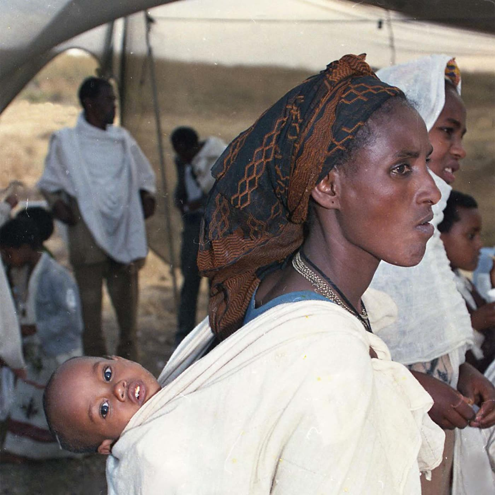
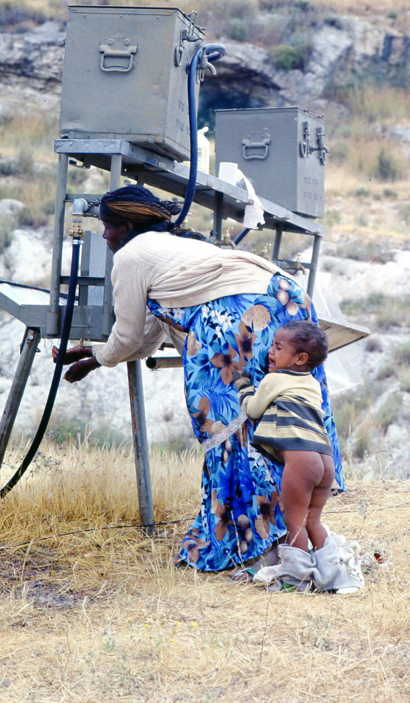
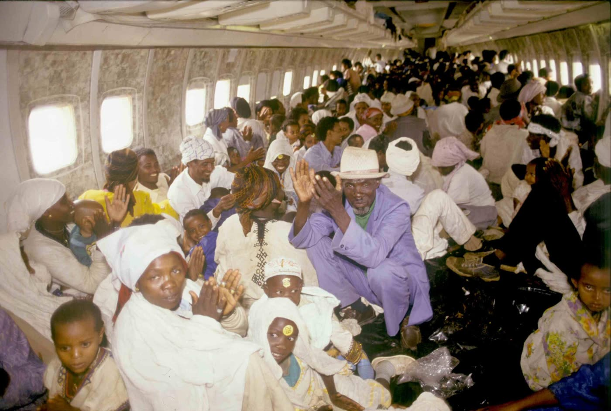
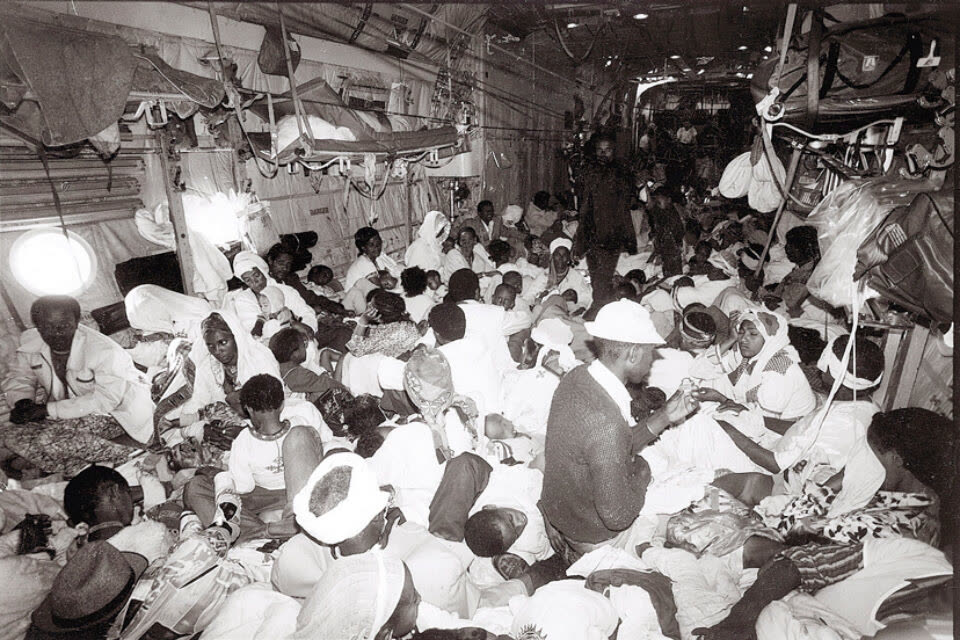
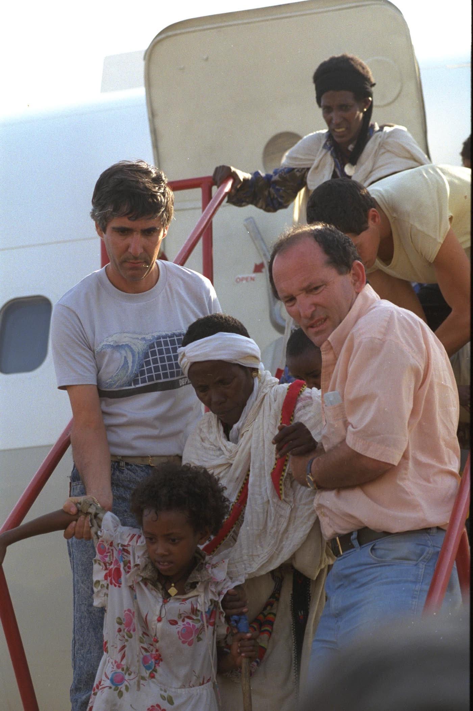

מבצע שלמה · 5324 מילים · 9 תמונות · 4 סרטונים





ארבעה סרטונים, כולם תומללו במלואם ונקראו לפני הבחירה (images.md §9). ו-01 · צה"ל, 24.5.2023, 10 דקות · אחד המשתתפים מספר איך גויסו טייסי אל על בצו שמונה, ואיך סודרו במטוס 760 כיסאות מפני שהעולים אורגנו בארבע קבוצות בנות 190 איש; ומה קרה כשנפתחו הדלתות בישראל — הדיילות ספרו את היורדים והגיעו למספר אחר מזה שאיתו המריאו מאדיס אבבה. ו-02 · הסוכנות היהודית, 7.3.2016, 19 דקות ·
https://www.youtube.com/watch?v=6QeQRa1ivxU אחד המשתתפים מספר איך גויסו טייסי אל על בצו שמונה, ואיך סודרו במטוס 760 כיסאות מפני שהעולים אורגנו בארבע קבוצות בנות 190 איש; ומה קרה כשנפתחו הדלתות בישראל — הדיילות ספרו את היורדים והגיעו למספר אחר מזה שאיתו המריאו מאדיס אבבה. ו-02 · הסוכנות היהודית, 7.3.2016, 19 דקות · הסרט הארוך והמפורט מבין הארבעה, ובו מסלול ההמראה בבולה והמשא ומתן. כאן גם מקורה של אחת הסתירות שהדף מציג: כותרת הסרטון נוקבת במספר עולים אחד, והקריינות בתוכו נוקבת באחר. ו-03 · ארכיון צה"ל, 29.4.2011, 8 דקות ·
https://www.youtube.com/watch?v=DJIQlQsMeUA הסרט הארוך והמפורט מבין הארבעה, ובו מסלול ההמראה בבולה והמשא ומתן. כאן גם מקורה של אחת הסתירות שהדף מציג: כותרת הסרטון נוקבת במספר עולים אחד, והקריינות בתוכו נוקבת באחר. ו-03 · ארכיון צה"ל, 29.4.2011, 8 דקות · חומר ארכיון בן-הזמן, בלי קריינות מאוחרת: "הכול נעשה פה ברגע האחרון... כל אחד פוחד." ו-04 · משרד הביטחון, 24.5.2021, 2 דקות ·
https://www.youtube.com/watch?v=1YWXNrnDPw4 חומר ארכיון בן-הזמן, בלי קריינות מאוחרת: "הכול נעשה פה ברגע האחרון... כל אחד פוחד." ו-04 · משרד הביטחון, 24.5.2021, 2 דקות · שתי דקות של צילומי ארכיון. משפט אחד מהן מסכם את כל התכנון: "אנחנו צריכים להביא הרבה מאוד אנשים במעט זמן." סדר: ו-03 ← ו-01 ← ו-02 ← ו-04. סרטון אחד בלבד: ו-01. --- ---
מעש: מבצע שלמה — הרכבת האווירית מאתיופיה · slug operation-solomon ·
מזהה 77b0cf66 · נכתב: 22.8.2026 · slim-doer.
מקור יחיד לכל עובדה כאן: journal.md. המבנה: spec.md. התמונות
והווידאו: images.md.
טיוטה ממופתחת. כל משפט עובדתי נושא בסופו את מזהי הממצאים שממנו
נולד. משפט שאינו נושא מזהה מסומן[חיבור]והוא משפט מעבר שלי, בלי
תוכן עובדתי חדש. אין בדף משפט יתום. המזהים אינם חלק מהטקסט
המתפרסם; הם יורדו בהעברה לאתר, ובמקומם עומדת שכבת הערות המקורות
שבסוף.
# מבצע שלמה: יותר מ-14 אלף יהודים הוטסו מאתיופיה לישראל בפחות מיומיים
(11 מילים; נבחרה ונומקה ב-spec.md §4.)
בנובמבר 1990 ישבו באדיס אבבה, בירת אתיופיה, שבעה-עשר עד שמונה-עשר אלף
יהודים שהגיעו אליה מחבל גונדר (מ-009), והמתינו סביב בניין הנציגות
הישראלית (מ-008). ב-21 במאי 1991 ירד מנגיסטו היילה מריאם, שליט אתיופיה,
מן השלטון, והמשטר שאיתו התנהלו המגעים על יציאתם חדל להתקיים (מ-041,
מ-071, מ-012). שלושה ימים אחר כך, ביום שישי בשעה 4:41 לפנות בוקר,
המריאו מישראל ארבעת המטוסים הראשונים (מ-052). למחרת בבוקר, בשעה 11:24,
המריא מטוס ה"הרקולס" האחרון מאדיס אבבה (מ-052). בתוך הזמן שבין שתי
ההמראות האלה יצאו מאתיופיה יותר מארבעה-עשר אלף בני אדם, בעשרות כלי טיס
שהותאמו לשאת נוסעים הרבה מעבר למספר הרגיל (מ-001, מ-007, מ-039, מ-040,
מ-046).
על מספרם המדויק ועל משך המבצע חלוקים המקורות זה עם זה, כבר מן
הימים ההם ועד היום (מ-039, מ-051, מ-001). מפקד המבצע אמר באותם ימים
שהוא מקווה שבמבצע נפתרה בעיית עליית יהודי אתיופיה (מ-064); מפקד יחידת
שלדג, שהיה במבצע עצמו, אמר בתחקיר בן-הזמן שלעדה האתיופית צפויות עשרות
שנים של קליטה קשה, לפי ציטוט שפרסם "מעריב" שלושים שנה אחר כך (מ-036,
מ-073).
(שבעה משפטים. אורך: בטווח 3–10 שנדרש.)
בנובמבר 1990 התכנסה ועדת העלייה והקליטה של הכנסת לדון בקליטת עולים
מאתיופיה (מ-008). יושב ראש הוועדה, מ' קליינר, פתח בכך ש"המצב בו שרויים
17 אלף איש סביב בנין הנציגות שלנו באדיס אבבה, ויש אומרים שמצויים שם 20
אלף איש, לא יכול להימשך כפי שהוא" (מ-008). סמנכ"ל מחלקת העלייה בסוכנות
היהודית, מ' גן, הסביר לוועדה כיצד התרכזו שם: אחרי שחודשו היחסים
הדיפלומטיים בין ישראל לאתיופיה בנובמבר 1989 (מ-002) הגיעו לבירה אלפים
רבים מגונדר, ו"מאלפיים יהודים שהיו באדיס אבבה... ובבת אחת הגיעו לשם 17
או 18 אלף יהודים" (מ-009).
על מחיר ההמתנה נחלקו באותה ישיבה עצמה. לפי דיווח הסוכנות היהודית
לוועדה מתו שם בין אפריל לאוקטובר 1990 מאה חמישים ושישה אנשים, ובאוקטובר
נפטרו שלושה (מ-010). ח"כ צ' ביטון אמר באותה ישיבה ש"מדובר ב-8 או 9 איש
המתאים שם מדי יום" (מ-010). [חיבור] פער של סדר גודל בין שתי האמירות,
ואיש מן השניים לא הציג את מקורו.
ביטון אמר בוועדה גם: "מדינת ישראל לא מעוניינת להביא את העולים האתיופים
לארץ. אמרתי זאת חד וחלק, ואני עומד מאחורי הדברים האלה" (מ-011). ח"כ י'
צידון חלק עליו, וסיפר לוועדה שכששאל את הגורמים המוסמכים אם אפשר לפתור
את הבעיה בכסף, "ואפילו יהיה זה כסף גדול", השיבו לו בשלילה, "ולא אני
מוסמך לקבוע אם מדינת ישראל יכולה למלא את הדרישה הצבאית של מנגיסטו"
(מ-074). באותם ימים כבר ניהל אורי לובראני מגעים באתיופיה, ותוכנם לא
נמסר לוועדה (מ-012).
ב-21 במאי 1991 חדל מנגיסטו היילה מריאם לשלוט באתיופיה (מ-041). סוכנות
הידיעות היהודית JTA כתבה על כך שלושה ימים אחרי המבצע במילה "התפטרות",
וארכיון צה"ל במשרד הביטחון כתב על אותו אירוע "בריחתו" (מ-041, מ-034).
בסקירת מודיעין ישראלית שהופצה שלושה ימים לפני תחילת המבצע כבר מכונה
מנגיסטו "השליט הקודם", ובה נכתב: "יש להביא בחשבון אפשרות פריצת מהומות
ואנרכיה בבירה, בעקבות תחושה של היעדר בעל בית. בהקשר זה לא ברורה עמדת
הצבא (האתיופי) שנאמנותו היתה נתונה בעיקר לשליט הקודם" (מ-071). לפי
ארכיון צה"ל, זו הסקירה שבעקבותיה החליטה ישראל לצאת למבצע (מ-034).[חיבור] מן הצד השני של אותו חלון עמדו המורדים.
ביום חמישי, 23 במאי 1991 אחר הצהריים, התקבלה הודעה שיש הסכמה עקרונית של
השלטונות האתיופיים למבצע החילוץ (מ-053). "הרמטכ"ל, רב-אלוף אהוד ברק,
החליט שנמריא, על סמך ההסכמה העקרונית בלבד", סיפר חודש אחר כך תת-אלוף
אמיר נחומי, שהיה אחראי על החלק האווירי (מ-053, מ-054). סגן הרמטכ"ל,
האלוף אמנון ליפקין-שחק, פיקד על המבצע מרגע נחיתת המטוסים הראשונים ועד
המראת האחרון מאדיס אבבה (מ-054, מ-033). מפקד יחידת שלדג דאז, סא"ל בני
גנץ, היה במבצע עצמו (מ-036, מ-073).
כינויו הצבאי של המבצע היה "גשמי זעף"; "מבצע שלמה" הוא השם הפומבי
(מ-067). [חיבור] הוא אינו המבצע הראשון שהעלה יהודים מאתיופיה, ואינו
מוסיף עליהם. מבצע משה הסתיים ב-5 בינואר 1985, ומבצע שבא, שהיה מבצע
אמריקני במארס אותה שנה, תוכנן ל-2,000 איש ובפועל זוהו בו 494 (מ-005).
בפקודת המבצע נכתב, לפי ציטוט שפרסם "מעריב" מתוך תיק המבצע: "הוטל על
צה"ל לבצע מבצע להוצאת פלשים מאתיופיה והבאתם ארצה... צה"ל אחראי לדאוג
להעברתם של העולים משטח השגרירות באדיס אבבה לשדה התעופה ומשם בטיסה לנמל
התעופה בן גוריון והסעתם באמצעות אוטובוסים ליעדים אשר ייקבעו על ידי
הסוכנות היהודית" (מ-070). המילה "פלשים" היא לשון המסמך משנת 1991
(מ-070). הפקודה עצמה שמורה בארכיון צה"ל ובגנזך המדינה, ולא נראתה
בעבודה על הדף הזה (מ-068).
ביום שישי, 24 במאי 1991 בשעה 4:41 לפנות בוקר, המריאו יחדיו ארבעת מטוסי
ה"בואינג" וה"הרקולסים" הראשונים, ובהם אנשי החפ"ק והציוד להקמתו בשדה
התעופה של אדיס אבבה (מ-052). במבצע השתתפו 24 מטוסים של חיל האוויר,
מהם 18 "הרקולס" ושישה "בואינג 707", ועוד עשרה מטוסי "בואינג" של אל על
(מ-051, מ-056). שמונה-עשר ה"הרקולס" ביצעו גיחה אחת כל אחד (מ-056).
בתנאים רגילים נכנסים ל"הרקולס" כתשעים נוסעים; במבצע שלמה טסו בכל אחד
מהם קרוב למאתיים (מ-056).
כתב ביטאון חיל האוויר, שטס בעצמו לאדיס אבבה וחזר עם העולים, כתב שבמקום
שורות הכיסאות היו פרוסים בצפיפות "עשרות, אם לא מאות, מזרנים כחולים,
במספר שכבות", ושיריעות ניילון שחורות עמדו מוכנות לגלגול מהיר בצד המטוס
(מ-060). שגריר ארצות הברית בישראל, ויליאם בראון, תיאר את אותו פרט
מהצד השני של הטיסה: הישראלים הוציאו מן המטוס את כל הציוד וכיסו את
הרצפה והדפנות ביריעות פוליאתילן שחורות (מ-023). סימני הזיהוי הישראליים
על המטוסים נצבעו (מ-046).
התכנון היה להעביר את היהודים מחצר השגרירות הישראלית באדיס אבבה
למטוסים, מרחק שישה עד שבעה קילומטרים (מ-058). "הכביש היה צר מאוד, ועבר דרך לב
העיר, שהיתה כבר במצב של אנרכיה. השלטון המרכזי, למעשה, לא שלט עוד.
העוצר, שהוטל בלילה על העיר, מנע מאיתנו תחילה כל אפשרות להסיע את
היהודים", אמר נחומי (מ-058). בכל שיירת אוטובוסים היו קרוב לאלף יהודים
(מ-058), וקצב ההסעות שנקבע במסמך מתיק המבצע היה ארבע עד חמש משאיות
ואוטובוסים (מ-072).
התכנון היה שבשעה אחת-עשרה בבוקר, שעה אחרי הנחיתה הראשונה באדיס אבבה,
יהיו כבר שלושת אלפים עולים בשדה התעופה (מ-058). "התברר שהבעיה הראשית היתה, שהעולים לא הגיעו מחצר השגרירות. נוצר
'צוואר בקבוק', והעולים לא הגיעו כלל לשדה-התעופה", ובעקבות זאת נדחה המשך
הרכבת האווירית (מ-058). לפי סרט הסוכנות היהודית, אלף וחמש מאות עולים
המתינו באוטובוסים מאז הבוקר, ושני מטוסים הוחזרו מן האוויר (מ-090).
[חיבור] בצד השני של אותו צוואר בקבוק עמד ארגון שהקהילה עשתה בעצמה. ראשי קבוצות
שמינה ועד מרכזי של מנהיגים יהודים מקומיים קיבלו הודעה בליל חמישי שעליהם
להתחיל לאסוף למחרת בבוקר את שלושים המשפחות שברשימה שהוכנה לכל אחד מהם
(מ-045). חיילים צעירים יוצאי אתיופיה ששירתו אז בצה"ל הוסעו לאדיס אבבה
כדי לשמש מתורגמנים (מ-045). על מצחי הילדים הודבקו מספרים, כדי שיישארו
עם קבוצתם ואפשר יהיה להשיבם אליה אם יאבדו; לפי הדיווח בן-הזמן, איש מהם
לא אבד (מ-046).
התכנון עצמו היה גדול מן התוצאה. "אם שיערנו, למשל, שצריך להוביל 18,000
יהודים, הרי שהתכוננו להוביל 21,000 ומעלה", אמר נחומי, "בדיעבד התברר,
שכושר ההובלה של המטוסים היה גדול הרבה יותר, כיוון שדחסנו את העולים כמה
שניתן" (מ-058).
"לפני שיצאנו מהארץ סידרו במטוס 760 כיסאות, מפני שהאתיופים אורגנו
בקבוצות של 190 איש", סיפר אחד המשתתפים בסרט של צה"ל משנת 2023
(מ-095). בשעה 8:50 נחת בישראל מטוס ה"ג'מבו" הראשון של אל על, ולפי
ביטאון חיל האוויר היו בתוכו "1,087 ויש אומרים — 1,200 עולים חדשים —
כנראה השיא העולמי" (מ-055). ספר השיאים של גינס מכיר בשיא, ונוקב במספר
"1,088 או בערך כך", ומוסיף שקיימים דיווחים סותרים על הספירה הסופית ושהם
נעים בין 1,078 ל-1,122 (מ-066).
אחד המשתתפים בסרט של צה"ל, שהיה על אותו מטוס, סיפר: "כשנחתנו ופתחו את הדלתות, הדיילות
עמדו על יד הדלתות וספרו את האנשים שירדו. והגענו ל-1,087 — וזה לא המספר
שידענו עליו כשיצאנו מאדיס אבבה" (מ-094). [חיבור] זו העדות היחידה
שמסבירה מדוע אין מספר אחד: ספרו פעמיים, בשני קצוות הטיסה.
בטיסה חזרה ליוו את העולים חמישה עולים ותיקים שדיברו את שפתם, וצוות
המטוס כלל שני רופאים ושני חובשים (מ-061, מ-060). לחלק גדול מן העולים לא
היו נעליים, והנפוצות שבהן היו נעלי ספורט בלי שרוכים; הזקנים היו עטופים
בבדים לבנים ארוכים (מ-061). ישישה בת 82
שסבלה מהתייבשות קיבלה טיפול, וכן אישה בחודש החמישי להריונה שלחץ דמה עלה
(מ-061). תחנת הבקרה האתיופית הראשונה בדרך הייתה באסמרה, ושם לא ענו, כיוון
שהעיר נכבשה שעות מעטות קודם לכן בידי המורדים; באחת הטיסות טסו מעל קרב
יריות באזור (מ-065). בשעה 10:43 הוכרז ברמקול שבעוד שתי דקות יחלוף המטוס
מעל ירושלים, וכולם נצמדו לחלונות שבצד ימין (מ-061).
"הרושם שלי היה, שהשלטונות האתיופיים ניסו להשהות את המבצע ככל האפשר",
אמר נחומי חודש אחרי, "אולי היה זה קלף ביטוח נגד המורדים, שאיימו להגיע
לאדיס אבבה. הם לא חיבלו במבצע, אלא היקשו על ביצועו" (מ-057). בבוקר יום
שבת לקחו את הסולמות (מ-057). בגלל ההמתנות באוויר, הוסיף נחומי, "היינו
חייבים לקנות דלק למטוסים" (מ-057). היקף שדה התעופה אובטח בידי חיילים
אתיופים (מ-044).
שלוש גיחות בוצעו במטוסים שנשכרו מחברת התעופה הלאומית של אתיופיה; JTA
כותבת זאת בסביל ואינה אומרת מי שכר אותם (מ-040). לפי סרט הסוכנות היהודית, האתיופים עמדו על כך "משום שרצו ליצור
את הרושם שהטסת העולים מבוצעת על ידם", ובאותו סרט נאמר גם שלפי בקשת
הממשלה האתיופית שאזרחים יבצעו את הפעולה, לבשו כל החיילים בגדים אזרחיים
(מ-089). בסרט של צה"ל נאמר שהאתיופים דרשו שהמבצע ייקרא הומניטרי או מבצע
לאיחוד משפחות, ולא מבצע צבאי (מ-095).
אחד המטוסים האתיופיים נחת בנתב"ג ביום שישי אחר הצהריים ובתוכו 196 עולים
(מ-063). "זוהי טיסה רגילה עבורי, כמו טיסת צ'ארטר", אמר הקברניט האתיופי
בראיון קצר לביטאון חיל האוויר, "לא התרגשתי במיוחד לקראת הטיסה לישראל"
(מ-063).
חצי שנה לפני המבצע נאמר בוועדת הכנסת שהדרישה שעל השולחן היא צבאית, וכי
הגורמים המוסמכים השיבו בשלילה על השאלה אם אפשר לפתור את הבעיה בכסף
(מ-074). שנה אחרי המבצע כתבה JTA שמנגיסטו עיכב את היציאה שוב ושוב
בניסיון להשיג נשק מישראל תמורת יהודי אתיופיה, ושישראל סירבה לעסקה
כזאת (מ-077). [חיבור] שני המקורות האלה, ישראלי-רשמי ואמריקני-עיתונאי,
אינם קשורים זה לזה, ושניהם מתארים דרישה לנשק.
על התשלום עצמו אין בתיק מסמך. באותה כתבה משנת 1992 כותבת JTA, בלי ייחוס
ובלי מקור, שכ-35 מיליון דולר הופקדו בחשבונות הבנק של ממשלת אתיופיה בידי
הישראלים כדי לעודד את מנגיסטו לשחרר את היהודים, ושהכסף נמשך בידי הממשלה
החדשה (מ-076). בסרט של הסוכנות היהודית משנת 2016 נאמר שלאחר שממשלת
ישראל הסכימה לשלם 35 מיליון דולר ניתן אור ירוק למבצע (מ-088).
מול שתי האמירות האלה עומדת עדותו של שגריר ארצות הברית בישראל, ויליאם
בראון, שאמר שהכספים הופקדו בבנק בניו יורק להעברה למנגיסטו רק כאשר
המטוסים הישראליים יתחילו להמריא (מ-020). [חיבור] לפי בראון הכסף עדיין
לא היה בידי אתיופיה; לפי JTA הוא כבר ישב בחשבונותיה. בשני המקורות
הישראליים הפנימיים בני-הזמן, ביטאון חיל האוויר ופקודת המבצע כפי
שצוטטה, אין זכר לכסף (מ-057, מ-070).
מספר הכסף היחיד שמצוי בתיק במסמך רשמי הוא אחר לגמרי. אורי גורדון, ראש
מחלקת העלייה בסוכנות היהודית, אמר לוועדת הכנסת ב-10 ביוני 1991: "כל
עניין העלאת יהדות אתיופיה לארץ עלה 150 מיליון דולר כאשר החלוקה היא:
שליש, 50 מיליון דולר, הם כסף מחוץ-לארץ, כולל הבאת העולים, ושני-שליש,
100 מיליון דולר, זאת קליטה בשנה הראשונה בארץ" (מ-075). הוא מדבר על כלל
העלאת יהודי אתיופיה ולא על מבצע שלמה, על תקציב הסוכנות היהודית ולא על
תקציב המדינה, ואינו מזכיר תשלום לאתיופיה (מ-075).
לפי JTA, "על פי הדיווחים" נחתה הטיסה הראשונה בישראל סביב שש בערב ביום
שישי, ורבים מן העולים נישקו את הקרקע (מ-046). [חיבור] מי נחת ראשון
אינו מוכרע: המטוס האתיופי שבקטע הקודם נחת בנתב"ג עוד באותו יום שישי
אחר הצהריים, לפי המקור בן-הזמן (מ-063). ביום שבת בשעה 11:24 המריא מטוס
ה"הרקולס" האחרון מאדיס אבבה (מ-052).
לפי דיווח JTA מ-28 במאי 1991, במהלך המבצע נולדו עשרה תינוקות, ארבעה או
חמישה מהם באוויר, לא דווח על אף מקרה מוות, ו-195 אושפזו עם הגעתם לישראל
(מ-042). כתב ביטאון חיל האוויר תיאר לידה אחת שראה: "כשעמדנו להמריא חזרה
לישראל, החלה אחת העולות האתיופית ללדת. הזעקתי אמבולנס עוד מהאוויר,
והתינוק הובהל לבית-החולים 'אסף הרופא'" (מ-062). בסרט הסוכנות היהודית
מסופר על תינוק שנולד על המסלול דקות ספורות לפני הטיסה והועלה למטוס
(מ-091). [חיבור] כמה תינוקות נולדו ואיפה בדיוק, בקרקע או באוויר, נותר
בלי תשובה אחת. שתי עדויות נפרדות מתארות לידה שהתחילה על הקרקע (מ-062,
מ-091).
בקבלת הפנים בנמל התעופה בן-גוריון נכחו ראש הממשלה יצחק שמיר, שר החוץ
דוד לוי, שר הביטחון משה ארנס ושר השיכון אריאל שרון (מ-065). השגריר
בראון, שהוזעק לבן-גוריון, תיאר את פתיחת הרמפה של אחד המטוסים: "אפשר היה
לראות ים של בני אדם בתוך המטוס", ואת הריח שיצא ממנו אחרי טיסה ארוכה
בלי שירותים (מ-023).
ב-10 ביוני 1991, שבועיים אחרי המבצע, התכנסה אותה ועדת עלייה וקליטה
לדון בהיערכות הסוכנות היהודית לקליטה ראשונית (מ-014). באותה ישיבה נאמרו
שלושה מספרים שונים: היושב ראש דיבר על "15 אלף היהודים שהגיעו", ראש
מחלקת העלייה בסוכנות אמר "14,200 העולים שהגיעו מאתיופיה", והיושב ראש
סיכם ואמר "קרוב ל-20 אלף יהודים שבאו בעת האחרונה מאתיופיה" (מ-014).
המספר השלישי הוא סך העלייה מאתיופיה בשנת 1991 כולה: המשרד לקליטת העלייה
רשם 14,195 עולים תחת "מבצע שלמה" ועוד 5,628 באותה שנה שלא במבצע (מ-007).[חיבור] שני המספרים הראשונים סופרים את המבצע, השלישי סופר שנה שלמה.
הסוכנות היהודית פתחה אז במיוחד 33 מרכזי קליטה נוספים, מהם 28 בתי מלון
(מ-015). א' מסלה, מן הוועד הפועל של ההסתדרות, אמר בוועדה:
"קליטת עולים מאתיופיה בבתי-מלון הוא עניין שנדון לכשלון מלכתחילה. אין מי
שישכנע אותנו שזה לא נכון", וסיפר שהקייסים שבאו במבצע שלמה "אוכלים עד
עצם היום הזה רק פירות" משום שהכשרות הנהוגה בארץ אינה מקובלת עליהם
(מ-017). ש' מולה, סגן יושב ראש ארגון הגג של עולי אתיופיה, ביקש באותה
ישיבה "שצריך לתת לעולים לבחור את הזרם" שאליו יופנו ילדיהם בחינוך
(מ-018). א' יורדאי, גזבר אותו ארגון, אמר באותה ישיבה עצמה: "היום אנחנו
נמצאים בתוך המבצע שהיה לתפארת מדינת-ישראל ולגאוות העדה, וכולנו שמחים
מאד על-כך שאנחנו מדברים עכשיו על בעיות הקליטה" (מ-019).
אורי גורדון אמר באותה ישיבה שגיוס הכספים סביב מבצע משה היה "גימיק"
שנגמר כעבור שנה, שהוא עצמו שולח כעת צעירים וטייס לדינרים בחוץ לארץ,
ו"ידוע לכולנו כי אנחנו נמצאים בבעיה קשה מאד" (מ-075).
בסיכומו של המבצע אמר האלוף ליפקין-שחק: "'מבצע שלמה' הוא אחד המבצעים המרגשים
ביותר, שלקחתי בהם חלק. אני מאוד מקווה שבמבצע זה פתרנו את בעיית עליית
יהודי אתיופיה" (מ-064). "מעריב" פרסמה ב-24 במאי 2021 ציטוטים מהקלטת
תחקיר בת-הזמן, ולפיהם אמר אז סא"ל בני גנץ: "לעדה האתיופית צפויים עשרות
שנים של קליטה קשה, אבל אנחנו ביחידה עשינו את 24 השעות הראשונות הכי טוב
שיכולנו" (מ-073). ההקלטה עצמה לא נשמעה בעבודה על הדף הזה (מ-073).
שנה אחרי המבצע דיווחה JTA שכארבעת אלפים יהודים נותרו באתיופיה, רובם
מחבל קווארה, וכי הג'וינט מחזיק באדיס אבבה מחנה שבו הוא מאכיל שלושת
אלפים מומרים שהתקבצו שם לפני המבצע (מ-078, מ-049).
הלשכה המרכזית לסטטיסטיקה מסרה בנובמבר 2025 ש"כשליש מהעולים מאתיופיה
עלו בשני גלי עלייה מרכזיים", מבצע משה ומבצע שלמה (מ-081). בסוף 2024
מנתה האוכלוסייה ממוצא אתיופי בישראל 177.6 אלף תושבים, ובהגדרת הלמ"ס
נכללים בהם ילידי אתיופיה וילידי ישראל שאביהם נולד באתיופיה; מי שרק אמו
ילידת אתיופיה נספר בנפרד, ומספרם 6,860 (מ-080). שיעור הניגשים לבחינות
הבגרות בקרב תלמידי כיתות יב יוצאי אתיופיה עמד על 93.7%, לעומת 95.1%
בכלל החינוך העברי (מ-083). באותו פרסום עצמו מדווח שבשנת 2024 היו רשומים
במשרד הרווחה כ-24.9 אלף ילידי אתיופיה, וכי בשנת פסק הדין 2023 היו 7.6%
מן היהודים והאחרים שעמדו לדין יוצאי אתיופיה, בעוד חלקה של האוכלוסייה
ממוצא אתיופי בכלל האוכלוסייה קטן מ-2% (מ-084).
בשנת 2024 הגיעו מאתיופיה לישראל עוד 285 איש (מ-082).
מה יש בכיתוב ומאין הוא בא. תיאור המראה נכתב ממה שנראה בפריים אחרי
פתיחת הקובץ. פרטים שאינם נראים בפריים — המקום, התאריך, שם הצלם, סוג
המטוס וזהות המצולמים — לקוחים מדף הקובץ בוויקישיתוף, ונאמר בכיתוב
שהם משם (images.md §1). כל תמונה ברישיון קריאייטיב קומונס מפורש
(מ-098).
ת-01
אישה נושאת תינוק על גבה במנשא בד, מתחת ליריעת אוהל, בין אנשים
עטופים בבדים לבנים. לפי דף הקובץ: מחנה המעבר באתיופיה, לפני הטיסה.
צילום: הרצל כונסארי, דובר צה"ל, 24.5.1991.
ת-02
אישה מתכופפת ומחזיקה את ידה תחת ברז של מכל מים נייד; ילד קטן נצמד
לשמלתה. לפי דף הקובץ היא רוחצת את ידיה במתקן המים שהקים צה"ל במחנה
המעבר. צילום: מיכאל (מיקי) צרפתי, דובר צה"ל, 24.5.1991.
ת-03
חבל מתוח, אוטובוס, וחייל חמוש: נקודת ההעלאה לאוטובוסים באתיופיה.
צילום: הרצל כונסארי, דובר צה"ל, 24.5.1991.
ת-04
מדבקת מספר על חזה של אם, וכוס מים לילד בוכה. לפי הדיווח בן-הזמן
הודבקו מספרים גם על מצחי הילדים, כדי שיישארו עם קבוצתם. צילום: הרצל
כונסארי, דובר צה"ל, 24.5.1991.
*(שונה מ-images.md §5. הנוסח שם תלה את המספרים בחלוקה לקבוצות העלאה
לפי מ-095; הנוסח כאן נסמך על מ-046, שאומר את מטרת המספרים במפורש. זו
האפשרות שנרשמה מראש ב-images.md §5 תחת "זהירות בכיתוב".)*
ת-05
תא נוסעים ארוך, בלי מושבים: העולים יושבים צפופים על רצפת התא, ובצדו
האחד פרושה יריעת ניילון שחורה. לפי דף הקובץ זהו מטוס בואינג 747 של
אל על. צילום: מיכאל (מיקי) צרפתי, דובר צה"ל, 25.5.1991.
ת-06
תא המטען של מטוס תובלה של חיל האוויר בדרך לישראל. צילום: מיכאל
וינראוב, דובר צה"ל, 25.5.1991.
ת-07
שני גברים בחולצה ובג'ינס תומכים באישה מבוגרת האוחזת מקל, בירידה
מכבש המטוס; ילדה יורדת לפניהם. לפי דף הקובץ אלה אנשי צוות קרקע,
והצילום נעשה בבסיס של חיל האוויר בישראל. צילום: צביקה ישראלי, לשכת
העיתונות הממשלתית, 24.5.1991.
ת-08
ראש הממשלה יצחק שמיר (מימין) בקבלת הפנים לעולים; לצדו שר החוץ דוד
לוי, ומאחוריהם צלמי עיתונות. צילום: מיכאל (מיקי) צרפתי, דובר צה"ל,
25.5.1991.
ת-09
ילדה שותה בקש בשעות הראשונות בישראל, במלון באילת שבו שוכנו עולים
בשלב הקליטה הראשוני. צילום: ראובן זלץ, 1991.
| מקום בדף | תמונה | הקטע |
|---|---|---|
| פתיח | ת-05 תא בלי מושבים | מוסרת היקף ורגע בבת אחת |
| גוף | ת-01 אם ותינוק | 2 · החלון נפתח |
| ת-02 מתקן המים | 3 · ההחלטה | |
| ת-03 החבל והאוטובוס | 5 · צוואר הבקבוק | |
| ת-04 המספר על החזה | 5 · הספירה | |
| ת-06 בטן מטוס התובלה | 6 · בתוך המטוס | |
| ת-07 הירידה מהכבש | 9 · 11:24 | |
| ת-08 שמיר בשדה | 10 · החדר, שוב | |
| סיום | ת-09 אילת | 11 · מה לא נגמר |
ת-05 משמשת גם כתמונת הפתיח וגם במקומה בקטע 6. אם הדף מקבל תמונה אחת
בלבד, זו התמונה.
ארבעה סרטונים, כולם תומללו במלואם ונקראו לפני הבחירה (images.md §9).
ו-01 · צה"ל, 24.5.2023, 10 דקות ·https://www.youtube.com/watch?v=6QeQRa1ivxU
אחד המשתתפים מספר איך גויסו טייסי אל על בצו שמונה, ואיך סודרו במטוס
760 כיסאות מפני שהעולים אורגנו בארבע קבוצות בנות 190 איש; ומה קרה
כשנפתחו הדלתות בישראל — הדיילות ספרו את היורדים והגיעו למספר אחר מזה
שאיתו המריאו מאדיס אבבה.
ו-02 · הסוכנות היהודית, 7.3.2016, 19 דקות ·https://www.youtube.com/watch?v=DJIQlQsMeUA
הסרט הארוך והמפורט מבין הארבעה, ובו מסלול ההמראה בבולה והמשא ומתן.
כאן גם מקורה של אחת הסתירות שהדף מציג: כותרת הסרטון נוקבת במספר
עולים אחד, והקריינות בתוכו נוקבת באחר.
ו-03 · ארכיון צה"ל, 29.4.2011, 8 דקות ·https://www.youtube.com/watch?v=1YWXNrnDPw4
חומר ארכיון בן-הזמן, בלי קריינות מאוחרת: "הכול נעשה פה ברגע האחרון...
כל אחד פוחד."
ו-04 · משרד הביטחון, 24.5.2021, 2 דקות ·https://www.youtube.com/watch?v=CXMiYyLJw0M
שתי דקות של צילומי ארכיון. משפט אחד מהן מסכם את כל התכנון: "אנחנו
צריכים להביא הרבה מאוד אנשים במעט זמן."
סדר: ו-03 ← ו-01 ← ו-02 ← ו-04. סרטון אחד בלבד: ו-01.
(כלל 180. הסיפור למעלה; כאן מה שעומד מאחוריו, ומה שאינו עומד.)
דרגה א' (מסמך רשמי): ארכיון המדינה, "עליית יהודי אתיופיה לישראל
1948–1985" (מק-01) · המשרד לקליטת העלייה, מסמך 410-94 מ-15.11.1994,
תיק גל-16923/3 (מק-02) · פרוטוקול 113 של ועדת העלייה והקליטה,
נובמבר 1990 (מק-03) · פרוטוקול 157 של אותה ועדה, 10.6.1991 (מק-04) ·
ארכיון צה"ל במשרד הביטחון, 26.5.2021 (מק-08) · בלוג ארכיון צה"ל,
21.5.2015 (מק-14) · הלשכה המרכזית לסטטיסטיקה, הודעה 367/2025,
16.11.2025 (מק-18) · ויקישיתוף, טקסט הוויקי של דפי הקבצים (מק-22).
דרגה א'–ב' (הגוף המבצע, בן-הזמן): אור קשתי, "מבצע של פעם בחיים",
ביטאון חיל האוויר 180, יוני 1991, עמ' 26–31 (מק-12). זהו המקור העשיר
בתיק. הוא בן-הזמן ונוקב בשמות, בדרגות ובשעות, אך הוא חיל האוויר כותב
על עצמו.
דרגה ב': JTA, 28.5.1991 (מק-10) · JTA, 29.5.1992 (מק-17) · ציר זמן
JTA, 1998 (מק-11) · ADST, היסטוריה שבעל-פה של דיפלומטים אמריקנים
(מק-05) · "מעריב", 24.5.2021, המצטט ממסמכי תיק המבצע (מק-15) · ספר
השיאים של גינס (מק-13).
דרגה ג' (גוף שהיה שותף למבצע, מספר עליו): סרט צה"ל 2023 (מק-20) ·
סרט הסוכנות היהודית 2016 (מק-19) · ארכיון הג'וינט (מק-06). כל אמירה
מהם בדף נושאת ייחוס גלוי בגוף המשפט.
נפסל כמקור לעובדות: סרטון משרד הביטחון (מק-09). התמליל שלו הוא 72
מילים, בלי מספר, תאריך או שם. הוא נכנס לדף כפריט תמונה בלבד (מ-038).
מקורות שלא נפתחו: Detroit Jewish News מ-31.5.1991 והאתר של שירות
הביטחון הכללי החזירו שניהם HTTP 403 · דף הפלאשמורה בספריית הכנסת נפתח
וחזר ריק · האתר הרשמי של חיל האוויר החזיר 403 ואין לו סנפשוט בארכיון
האינטרנט. אף אחד מהם לא צוטט, ולא נוסח דבר מתוך תקצירי החיפוש שלהם.
כמה בדיוק הוטסו. בתיק שמונה גרסאות: 14,087 (JTA, בן-הזמן, מ-039) ·
14,195 (רישום המשרד לקליטת העלייה, מ-007) · 14,200 (הסוכנות היהודית
בוועדת הכנסת, מ-014) · 14,310 (סרט צה"ל 2023, מ-093) · 14,400 (ביטאון
חיל האוויר, מ-051) · "יותר מ-14,000" (ארכיון המדינה, מ-001) · "כ-15
אלף" (הודעת משרד הביטחון, מ-035) · כ-15,000 (קריינות הסוכנות היהודית,
מ-087). הדף נוקב ברצפה המשותפת לכולם ולא באחד מהם.
המספר 14,325, המופיע בכותרת הדף שהיה קודם באתר, אינו נמצא באף אחד
מ-22 המקורות בתיק. הוא אותר בכותרת סרטון של הסוכנות היהודית, והקריינות
בגוף אותו סרטון עצמו נוקבת ב-15,000 (מ-086). אין לו מקור, והוא אינו
מופיע בדף הזה.
כמה זמן. ארכיון המדינה וגינס אומרים 36 שעות (מ-001, מ-066) · JTA
בן-הזמן אומר "כ-30 שעות" (מ-039) · ביטאון חיל האוויר אומר 33 שעות
(מ-051) · הסוכנות היהודית אומרת 35 שעות (מ-087). שתי שעות השעון
המתועדות הן 4:41 ו-11:24 (מ-052), וההפרש ביניהן, 30 שעות ו-43 דקות,
הוא חישוב של הכותב ולא ציטוט. ייתכן שכל מדידה מודדת קצה אחר של המבצע,
וזו השערה שלא אומתה.
כמה גיחות. 33 (ארכיון המדינה, מ-001) · 40 (JTA, מ-040) · 41
(ביטאון חיל האוויר על עצמו, מ-051, וכן הסוכנות היהודית, מ-087). המספר
40 של הג'וינט (מ-027) לא נספר כמקור נוסף, משום שסביר שהוא נגזר
מדיווחי 1991.
כמה כלי טיס — ולמה הדף אינו נוקב במספר. אין בתיק מקור שנוקב במספר
כולל של כלי הטיס. מה שיש הוא רכיבים: 24 מטוסי חיל האוויר, מהם 18
"הרקולס" ושישה "בואינג 707" (מ-051) · עשרה מטוסי "בואינג" של אל על
(מ-056, מ-040) · שלוש גיחות במטוסי חברת התעופה האתיופית (מ-040).
JTA, המקור היחיד שמנסה לתאר את הסך, כותב "עשרות כלי טיס"
(dozens of aircraft) ולא מספר (מ-040). המספר 34 שהופיע בטיוטה קודמת
של הדף היה חיבור של הכותב (24+10), והוא גם משמיט את המטוסים
האתיופיים שהדף עצמו מדווח עליהם בקטע 7. ספר השיאים של גינס אמנם נוקב
ב-34, אבל ביחידת ספירה אחרת — "34 ג'מבו של אל על ו'הרקולס' C-130"
(מ-066) — כלומר בלי ששת ה"בואינג 707"; ולפי הביטאון, עשרה ג'מבו
ושמונה-עשר הרקולס הם 28 ולא 34. **אין כאן התכנסות, ולכן הדף כותב
"עשרות".**
טיסת השיא. גינס עצמו כותב "1,088 או בערך כך", ומוסיף שיש דיווחים
סותרים על הספירה הסופית, בטווח 1,078 עד 1,122 (מ-066). הגוף שמנפיק את
השיא אומר שאין מספר מדויק, וזו התשובה. שם טייס הג'מבו אינו נכתב בדף:
ביטאון חיל האוויר קורא לו אביב גדעון (מ-055), ו-JTA קורא לו
"Captain Avi Orr, head of the El Al's Operations Division" — קברניט
אבי אור, ראש אגף המבצעים של אל על (מ-043). ואין הכרעה. **"Captain"
כאן הוא קברניט, תוארו של טייס אזרחי;** ברשומה מוקדמת ביומן הוא תורגם
בטעות לדרגה הצבאית "רס"ן", והדף אינו נוקב בדרגה. המספר 1222, המופיע
בתיאור אחד הקבצים בוויקישיתוף, נפסל: כתב אותו מעלה הקובץ בלי מקור,
ואין לו מקבילה באף מקור בתיק.
המושבים בג'מבו — סתירה שהדף אינו מכריע. ספר השיאים של גינס כותב
שהמושבים הוצאו כדי להכניס נוסעים ככל האפשר (מ-066), ועד ראייה בביטאון
חיל האוויר מתאר מזרנים כחולים "במקום בו היו מותקנות שורות שורות של
כסאות" (מ-060) — אבל הוא מתאר מטוס "בואינג 707" של חיל האוויר, לא את
הג'מבו. מן הצד השני, משתתף בסרט צה"ל אומר שלפני היציאה סידרו במטוס
760 כיסאות (מ-095), והביטאון בן-הזמן כותב על מטוס השיא עצמו שהוא
"המשמש בדרך כלל כמטוס מטען (CARGO)" (מ-055) — ומטוס מטען אין ממנו מה
להוציא. גם דף הקובץ של ת-05 מגדיר את המטוס Boeing 747 Cargo.
הדף אינו מכריע, ואינו כותב באף מקום שהמושבים הוצאו מן הג'מבו.
התינוקות. JTA בן-הזמן אומר עשר לידות, "ארבע או חמש" מהן באוויר
(מ-042) · הסוכנות היהודית אומרת ארבע (מ-087) ובמקום אחר "בשתי טיסות"
(מ-091) · גינס אומר שניים שנולדו בטיסה (מ-066). מולם עומדות שתי עדויות
נפרדות ללידה שהחלה על הקרקע (מ-062, מ-091). הדף אינו נוקב במספר.
מי נחת ראשון בישראל. JTA כותבת שהטיסה הראשונה נחתה "על פי
הדיווחים" סביב שש בערב ביום שישי (מ-046) — והמילה הזאת היא סייג של
המקור עצמו, לא של הדף. מולה, ביטאון חיל האוויר בן-הזמן מספר שמטוס של
חברת התעופה האתיופית נחת בנתב"ג "בשעות אחר-הצהריים של יום שישי" ובתוכו
196 עולים (מ-063). שני אלה אינם יכולים לעמוד יחד, ואין בתיק מקור
שמכריע. הדף מציג את שניהם.
מה שנשאר בחוץ בהיעדר מקור: "10 עד 15 יום" כמשך התוכנית המקורית
(מ-026) · יותר מ-4,000 המתים בדרך לסודן ב-1984 (מ-050) · המספר 2,800
פלאשמורה · טענת שחיתות המופיעה בספר שלא הושג ולא נפתח.
פקודת המבצע לא נראתה. מספרי התיק שלה ידועים: ארכיון צה"ל, 13/2014
תיק 61 דפים 25–26, ובגנזך המדינה א-5144/13 (מ-068). מה שמופיע בדף הוא
ציטוט של "מעריב" מתוך המסמך (מ-070), ולא המסמך.
התשלום. אין בתיק מסמך המתעד תשלום. שני מקורות בדרגה ב' וג' אומרים
35 מיליון דולר (מ-076, מ-088), והם אינם מקורות בלתי תלויים זה בזה.
עדות השגריר בראון סותרת אותם בשאלת מקום הכסף ומקבלו (מ-020). שני
המקורות הישראליים הפנימיים בני-הזמן שותקים (מ-057, מ-070), והשתיקה
אינה הכחשה ואינה אישוש.
יחידת הספירה של 14,195. המסמך של המשרד לקליטת העלייה סופר "נרשמים
ושנות רישומם", לא נוסעים שעלו למטוס (מ-007). לא נמצא בתיק מקור שהצהיר
שספר נוסעים בפועל.
הגדרת "ממוצא אתיופי". אצל הלמ"ס היא ילידי אתיופיה או ילידי ישראל
שאביהם נולד באתיופיה. זו הגדרה צרה מן האינטואיציה (מ-080). הנתון על
7.6% מן העומדים לדין מודד מי עמד לדין ולא מי עבר עבירה, ואינו בהכרח
לפי אותה הגדרה (מ-084). הצבתו לצד חלקה של האוכלוסייה בכלל האוכלוסייה
היא של הדף; הלמ"ס אינה עורכת את ההשוואה הזאת (מ-084).
תשע התמונות בדף הן ברישיון קריאייטיב קומונס מפורש, לפי שלושה כרטיסי
VRT שנקראו בטקסט הוויקי של דפי הקבצים: 2021092110009708 (שבע
תמונות, ארכיון צה"ל ומערכת הביטחון) · לשכת העיתונות הממשלתית2012112010011362 · ראובן זלץ 2010112710014092 (מ-098). שדה המקור
בדפי הקבצים מפנה לאתרי עיתונות שמהם נסרק העותק, ולא לבעל הזכויות;
הקרדיט בדף ניתן לצלם ולארכיון (מ-099).
שם האוסף אינו אחד. תחת אותו כרטיס VRT עצמו רושמים דפי הקבצים שני
שמות אוסף שונים: ארבע תמונות (ת-01, ת-03, ת-04, ת-06) הן "אוסף דובר
צה"ל, ארכיון צה"ל ומערכת הביטחון", ושלוש (ת-02, ת-05, ת-08) הן
"אוסף במחנה, ארכיון צה"ל ומערכת הביטחון". שם האוסף הוא חלק מתנאי
הייחוס ברישיון, ולכן הוא נרשם כאן כפי שהוא ולא מאוחד.
מי צילם. שמונה מתשע התמונות צולמו בידי גוף שהיה שותף למבצע, שבע
בידי צלמי דובר צה"ל ואחת בידי לשכת העיתונות הממשלתית (פ-26). התמונה
התשיעית צולמה בידי צלם עיתון מקומי באילת, בישראל. לא נמצא בוויקישיתוף
תצלום מן הצד האתיופי שצולם בידי אתיופי, בידי עולה או בידי צלם עצמאי.
תצלומים אינם מקור לעובדה בדף הזה, אך הם מקור לרושם, והרושם כאן הוא של
הגוף המצלם.
שני זיהויים בכיתובים, ומאין הם. בת-08 הזיהוי "שר החוץ דוד לוי"
מופיע בתיאור הקובץ, שכתב מעלה הקובץ — אותו שדה שממנו נפסל המספר
לוי משנת 1989 באותו אוסף ציבורי (שיער אפור, משקפיים, עניבה מנוקדת),
וההתאמה ברורה. הזיהוי נכתב בכיתוב בקולו של הדף על סמך ההשוואה הזאת,
ולא על סמך תיאור הקובץ. · בת-07, לעומת זאת, הזיהוי "אנשי צוות קרקע"
אינו נראה בפריים — שני הגברים לבושים בגדים אזרחיים — והוא מיוחס
בכיתוב במפורש לדף הקובץ.
חותמת השעה של ת-07 לא נבדקה. דף הקובץ נושא 1991-05-24 12:48:57,
ותיאורו מדבר על ראשוני העולים. שעה זו מוקדמת מן ההערכה שהטיסה
הראשונה נחתה סביב שש בערב. אינני יודע אם השדה מתעד את שעת הצילום או
את שעת הקיטלוג בארכיון לע"מ; רשומת לע"מ המקורית D205-111 לא נפתחה.
הפרט נרשם כאן פתוח.
מה נפסל. קובץ המתויג 25.5.1991 שבו אנשים ישנים בלבוש מערבי, שונה
מהותית מכל שאר תצלומי אותם יומיים, נפסל בשל ספק זיהוי. תצלום הפגנה של
הקהילה האתיופית נפסל משום שצולם ב-31.10.1979, שתים-עשרה שנה לפני
המבצע.
שהמילה בהן חד-משמעית, ולא נגעו במספרים ובשמות.
כרצף בתוך טור אחד לפני שנרשם.
מילים. בציטוט שבקטע 6 אומר התמליל "והתפתחו את הדלתות" ו"הדלות עמדו";
בדף נכתב "ופתחו את הדלתות" ו"הדיילות עמדו". שני התיקונים ברורים
מהקשר, ולא נגעתי במספרים. התמליל אינו מזהה דוברים, ולכן אף דובר
בסרטונים אינו מיוחס בדף בשם או בתפקיד.
פסקה שבה מספר קצין שעד אז שלט "ממוצב השליטה שבבסיס" ועכשיו רואה
לראשונה מקרוב את העולים יורדים מן המטוסים; לכן הנחיתה היא בישראל.
את היום המקור אינו נוקב, והדף אינו משלים אותו.
פרוטוקול 113 נושא "יום שלישי י"ח בחשוון התשנ"א, 5 בנובמבר 1990",
וכותרת המערכת של אותו מסמך עצמו רושמת 06/11/1990 (מק-03). הדף כותב
"בנובמבר 1990" ואינו נוקב ביום.
מאוחרות יותר ביומן היא צוינה בטעות כ-מ-022; מ-022 הוא ממצא אחר,
עדותה של אן או' קרי משגרירות ח'רטום. הדף מצטט את מ-020.
אדם (מ-100).
וארכיון צה"ל קורא לו "אמנון ליפקין שחק" (מ-033). הדף נוקב בצורה אחת
בלבד, ליפקין-שחק, כדי שלא יובן שמדובר בשני אנשים.
מבצע משה". המשפט אינו מצוטט בדף. התמליל אינו מזהה דוברים, ולכן אף
משפט מן הסרטון אינו מיוחס בשם.
סטטוס: טיוטה ממופתחת, שלב ה'. לא הועלה דבר לאתר החי.
נחתם: slim-doer · 22.8.2026 · שלב ה'.
operation-solomonמי: slim-checker · מתי: 22.8.2026 · מה נבדק: page.md (554 שורות),
תשע התמונות שהדף משתמש בהן, וכל מקור שהדף מצטט — **מול המקור החי או
הסנפשוט, לא מול דף המידע.**
לא ביקשתי ולא ראיתי טיוטות, שיקולי כתיבה או מפרט.
לא נגעתי בשום קובץ אחר בתיקייה.
הכותרת: *"מבצע שלמה: יותר מ-14 אלף יהודים הוטסו מאתיופיה לישראל בפחות
מיומיים"*.
עצרתי כאן וכתבתי, לפני שקראתי מילה נוספת:
הבנתי שהייתה פעולה אחת רצופה — לא מסע ולא תהליך — שבה העבירו במטוסים
קצת יותר מארבעה-עשר אלף בני אדם ממדינה אחת לשנייה, ושכל זה נדחס לתוך פחות
מארבעים ושמונה שעות. הבנתי שמישהו מדד את הזמן, אחרת לא היו כותבים
"פחות מיומיים". השם "מבצע שלמה" נשמע צבאי, ולכן הנחתי שצה"ל או חיל האוויר
ביצעו.
מה שהכותרת לא אמרה לי, ושהנחתי בטעות:
אומר בסופו שכארבעת אלפים נשארו מאחור, ושבשנת 1991 עצמה עלו עוד 5,628
שלא במבצע. שתי העובדות האלה הופכות את ההנחה שלי ללא נכונה.
התעופה האתיופית הטיסה עולים.
ארבע גרסאות למשך (30, 33, 35, 36 שעות), וששתי שעות השעון היחידות
המתועדות נותנות 30 שעות ו-43 דקות. הכותרת נכונה תחת כל אחת מהן — אבל
הביטחון שהיא משדרת אינו קיים במקורות.
נכתבו בקריאה ראשונה, כגולש, לפני שפתחתי מקור אחד. ממוספרות לפי מקומן בדף.
באתיופיה או לא?
אם 34 מטוסים הביאו 14 אלף איש, יוצא יותר מ-400 איש למטוס. זה אפשרי?
אחר כך ש"בין שתי השעות האלה יצאו מאדיס אבבה" 14 אלף איש. איך יוצאים
מאדיס אבבה בשעה שבה המטוסים עוד עומדים בישראל?
אנשים עלו במבצע משה? בלי זה אינני יודע אם 14 אלף זה הרבה או מעט.
באיזה יום? הקטע מדבר גם על אדיס אבבה וגם על ישראל, ולא אומר.
איפה ישבו ה-327 הנוספים? הדף מציג את שני המספרים ולא מחבר ביניהם.
הצהריים; בקטע 9 "הטיסה הראשונה נחתה בישראל סביב שש בערב** ביום
שישי". אז מי נחת ראשון?
אמר, ומי סותר את מי, ובסופן אני עדיין לא יודע אם ישראל שילמה. הקטע
מרגיש כמו דוח על המקורות ולא כמו סיפור. משם והלאה קראתי בדילוגים.
אחוז מהעומדים לדין — מה הקשר של אלה לרכבת אווירית של יומיים? הרגשתי
שנכנסתי לאמצע מאמר אחר.
אבל איך הדף יודע שהוציאו אותם, ולא שמעולם לא היו שם?
שם, ואין סרטון שאני יכול להצביע בו על הרגע.
מסודרים לפי חומרה. אינני מציע ניסוחים חלופיים — אני מוצא, העושה מתקן.
מיקום: הטריילר, שורות 32–34.
הבעיה: המספר 34 נכתב כעובדה חלקה, בייחוס לשישה ממצאים. **אף אחד
מהשישה אינו אומר 34.** 34 הוא חיבור שערך הכותב (24+10). גרוע מזה: המקור
שממנו נלקחו שני המחוברים אומר במפורש שהיו עוד כלי טיס מעבר להם, והדף
עצמו מדווח על אחד מהם בקטע 7.
הראיה:
הדף:
"בין שתי השעות האלה יצאו מאדיס אבבה יותר מארבעה-עשר אלף בני אדם
בשלושים וארבעה כלי טיס, ובחלקם פרסו מזרנים במקום שורות הכיסאות
(מ-001, מ-007, מ-039, מ-051, מ-056, מ-060)."
JTA, 28.5.1991 (מ-040), שורות 2–3 בסנפשוט:
"the airlift was accomplished in a mere 40 flights, **involving dozens
of aircraft**. Twenty-four of the planes were Israeli air force jets,
including Boeing 707s and Hercules transport planes. Ten El Al jumbo
jets were used, and **three flights used planes chartered from
Ethiopia's state airline**."
ביטאון חיל האוויר 180 (מ-051, מ-056) נוקב ב-"24 מטוסים של חיל־האוויר"
ו-"עשרה מטוסים של ״אל־על״" — ואינו כותב 34 בשום מקום.http://files.iaflibrary.org.il/DigitalLibrary/BITEONIM/180.pdf
והדף עצמו, קטע 7, שורות 188 ו-195:
"שלוש גיחות בוצעו במטוסים ששכרה ישראל מחברת התעופה הלאומית של אתיופיה"
"אחד המטוסים האתיופיים נחת בנתב"ג ביום שישי אחר הצהריים ובתוכו 196 עולים"
כלומר לפי הדף עצמו יצאו מאדיס אבבה בני אדם גם בכלי טיס שאינם בין ה-34.
המשפט בטריילר סוגר עליהם דלת.
חומרה: חוסם.
מיקום: כיתובי התמונות, ת-05, שורות 332–335. זו גם תמונת הפתיח של הדף.
הבעיה: הכיתוב אומר "לאחר שהמושבים הוצאו ממנו". בפריים רואים תא בלי
מושבים — ואי-אפשר לראות בפריים שהיו שם מושבים קודם. זו מסקנה, לא מראה.
והדף מכריז שורה אחת לפני הכיתובים (שורה 307) שהם "נכתבו ממה שנראה בפריים".
מעבר לכך, שלושה מקורות מושכים לכיוון ההפוך דווקא לגבי המטוס הזה.
הראיה:
הדף:
"תא הנוסעים של מטוס בואינג 747 של אל על, לאחר שהמושבים הוצאו ממנו.
הנוסעים יושבים על רצפת התא."
הכרזת הדף על שיטת הכיתובים, שורה 307:
"הכיתובים נכתבו ממה שנראה בפריים אחרי פתיחת הקובץ, ולא מתיאור הקובץ
בוויקישיתוף"
טקסט הוויקי של הקובץ עצמו:
`{{en|1=1222 passengers were flown out of Addis Abeba to Israel in a
[[Boeing 747]] Cargo aircraft of El Al as part of Operation Solomon .}}`[[Category:Cargo aircraft]]
https://commons.wikimedia.org/wiki/File:Operation_Solomon_IDF_Archives_I.jpg
ביטאון חיל האוויר על אותו מטוס שיא (מ-055):
"ממטוס ה״בואינג 747״, המשמש בדרך כלל כמטוס מטען (CARGO), מחקו עובדי
החברה את דגל ישראל"
ועדות המשתתף בסרט צה"ל 2023 (מ-095), מתומלל מהסרטון עצמו:
"לפני שיצאנו מהארץ סידרו במטוס 760 כיסאות, מפני שהאתיופים אורגנו
בקבוצות של 190 איש."
https://www.youtube.com/watch?v=6QeQRa1ivxU
שתי עדויות הראייה שכן מדברות על מושבים שהוסרו — מ-060 (כתב הביטאון) ומ-023
(השגריר בראון) — מתייחסות למטוס בואינג 707 של חיל האוויר ולמטוס
תובלה, לא לג'מבו של אל על.
חומרה: חוסם. זהו כיתוב שנכתב מן ההיגיון, על התמונה המרכזית של הדף,
ובמקום שבו המקור שממנו נלקח הקובץ אומר דבר אחר.
מיקום: כיתובי התמונות, ת-01, שורות 311–313.
הבעיה: הכיתוב קובע שהתצלום צולם "יום לפני הטיסה". דף הקובץ אומר "לפני
הטיסה" בלי יום, ונושא תאריך 24.5.1991 — שהוא יום הטיסה עצמו לפי הדף
(המראה ב-4:41, נחיתה ראשונה בישראל "סביב שש בערב"). "יום לפני" אינו נראה
בפריים ואינו נמצא במקור, והוא סותר את התאריך שהדף עצמו מדפיס באותו כיתוב.
הראיה:
הדף:
"אישה נושאת תינוק על גבה במנשא בד, מתחת ליריעת האוהל במחנה המעבר
באתיופיה, יום לפני הטיסה. צילום: הרצל כונסארי, דובר צה"ל, 24.5.1991."
טקסט הוויקי של הקובץ:
`|Description={{he|1=מבצע שלמה - יהודי אתיופיה במחנה המעבר באתיופיה **לפני
הטיסה** לישראל}}`|Date=1991-05-24
https://commons.wikimedia.org/wiki/File:Operation_Solomon_IDF_Archives_XV.jpg
חומרה: חוסם. תאריך שהומצא בכיתוב, בניגוד לח-1.
מיקום: הסרטונים, ו-01, שורות 381–383.
הבעיה: שלוש טענות בשלוש שורות, ושלושתן אינן בתמליל:
א. "הוציאו 760 מושבים מהמטוס" — הדובר אומר שהכיסאות סודרו, לא הוצאו.
ב. "חילקו את החלל לארבע קבוצות" — לפי הדובר חולקו האנשים לקבוצות של
190, ומהחלוקה הזאת נגזר מספר הכיסאות. החלל לא חולק לכלום.
ג. "טייס אל על שהוזעק בצו שמונה" — הדובר מדבר על הטייסים בגוף שלישי
ומספר שהוא הכין להם תיקי משימה. אין בתמליל דבר שמזהה אותו כטייס.
הראיה:
הדף:
"טייס אל על שהוזעק בצו שמונה מספר איך **הוציאו 760 מושבים מהמטוס וחילקו
את החלל לארבע קבוצות**"
התמליל של אותו סרטון עצמו, ברצף אחד:
"סוכם לגייס את הטייסים בצו שמונה. הכנתי למעשה תיקי משימה... לפני שיצאנו
מהארץ **סידרו במטוס 760 כיסאות, מפני שהאתיופים אורגנו בקבוצות של 190
איש**. אמרו, ארבע קבוצות של 190 איש זה 760, זה מספיק בשביל הג'מבו."
https://www.youtube.com/watch?v=6QeQRa1ivxU (תומלל מחדש היום בכלי video)
הדף עצמו, קטע 6 שורות 156–157, כותב את אותו פרט נכון: "סודרו במטוס
הג'מבו 760 מקומות ישיבה, לפי חלוקה של העולים לארבע קבוצות". שני מקומות
בדף אומרים דברים הפוכים על אותו מקור.
חומרה: חוסם.
מיקום: שכבת הערות המקורות, "כמה גיחות", שורות 465–467.
הבעיה: הדף מציג את 34 כמקום היחיד שבו המקורות מסכימים. בפועל: שניים
מ"שלושת המקורות" אינם נוקבים ב-34 כלל (זהו חיבור של הכותב), והשלישי, גינס,
נוקב ב-34 של יחידת ספירה אחרת — ג'מבו של אל על ו"הרקולס" בלבד, בלי
ששת ה"בואינג 707" שהדף עצמו מונה בקטע 4.
הראיה:
הדף:
"על מספר כלי הטיס דווקא יש התכנסות: **34, משלושה מקורות שאינם תלויים זה
בזה** (מ-040, מ-051 ומ-056, מ-066)."
גינס (מ-066):
"involving a total of 34 El Al jumbo jets and Hercules C-130s — with
seats removed to accommodate the maximum number of passengers."
https://www.guinnessworldrecords.com/world-records/most-passengers-on-an-aircraft
הדף, קטע 4 שורות 111–113:
"24 מטוסים של חיל האוויר, מהם 18 "הרקולס" ושישה "בואינג 707", ועוד
עשרה מטוסי "בואינג" של אל על"
10 ג'מבו + 18 הרקולס = 28, לא 34. כדי להגיע ל-34 צריך להוסיף את ששת
ה-707 — שגינס אינו מזכיר. הדף עצמו רושם באותו קטע אזהרה נכונה על ספירה
כפולה של הג'וינט, ולא מחיל את אותה אזהרה על שלושת אלה.
חומרה: לתיקון.
מיקום: שכבת הערות המקורות, §"המספרים והסתירות", שורות 442–483.
הבעיה: הפרק מונה שש סתירות פעילות. **סתירה שביעית, שהתיק מכיל
במפורש, אינה מופיעה:** האם המושבים הוצאו מן הג'מבו או שסודרו בו כיסאות.
זו סתירה בין מקורות חזקים, והדף מכריע בה בשקט לצד אחד — פעם בכיתוב ת-05
(ממצא 2) ופעם בתקציר ו-01 (ממצא 4) — בלי לומר לקורא שהיא קיימת. ח-2 דורש
שסתירות אמיתיות בין מקורות חזקים יוצגו ולא יוסתרו.
הראיה: שני צדי הסתירה, שניהם בתיק:
בעד הוצאת מושבים — גינס (מ-066): "with seats removed to accommodate the
maximum number of passengers"; ו-מ-060, עדות ראייה: "במקום בו היו מותקנות
שורות שורות של כסאות, היו עתה פרוסים בצפיפות עשרות... מזרנים כחולים"
(על בואינג 707 של חיל האוויר).
נגד — מ-095: "לפני שיצאנו מהארץ סידרו במטוס 760 כיסאות"; ותיאור קובץ
ת-05 בוויקישיתוף: "Boeing 747 Cargo aircraft".
בנוסף, קטע 6 שורה 156 מעביר את "760 כיסאות" שבמקור ל-"760 **מקומות
ישיבה**". ההחלפה מרככת בדיוק את המילה שבה תלויה הסתירה: "כיסא" הוא רהיט,
"מקום ישיבה" יכול להיות גם ריבוע על הרצפה.
חומרה: לתיקון.
מיקום: כיתובי התמונות, ת-07, שורות 341–343.
הבעיה: הכיתוב קובע "שני אנשי צוות קרקע". הפריים מראה שני גברים
בבגדים אזרחיים — חולצת טי וג'ינס. הזיהוי מגיע משם הקובץ ומתיאורו
בלע"מ. הדף עשה את הדבר הנכון בת-08, שם ייחס זיהוי דומה במפורש
("לפי כיתוב ארכיון צה"ל"), ולא עשה זאת כאן.
הראיה:
הדף:
"ירידה מהמטוס בישראל; שני אנשי צוות קרקע תומכים באישה מבוגרת האוחזת
מקל הליכה."
טקסט הוויקי של הקובץ:
`|Description= GROUND CREWS HELPING FIRST OF "OPERATION SOLOMON"
IMMIGRANTS FROM ETHIOPIA OFF THE PLANE, AT AN AIR FORCE BASE.`צוותי נמל התעופה מסייעים לעולים חדשים מאתיופיה לרדת מן המטוס
חומרה: לתיקון. לא העליתי לחוסם משום שהעובדה עצמה כן נשענת על מקור
— כיתוב הארכיון. הליקוי הוא בהצגתה כראייה מן הפריים ובלי ייחוס, בניגוד
להכרזה בשורה 307 ובניגוד לדרך שבה הדף עצמו נהג בת-08.
מיקום: כיתובי התמונות, ת-08, שורות 345–348.
הבעיה: הדף מייחס את זיהוי דוד לוי ל"כיתוב ארכיון צה"ל". שדה ה-Description
בוויקישיתוף אינו כיתוב הארכיון — הוא טקסט שכתב מעלה הקובץ, והוא מפנה
לכתבת ynet כמקור הסריקה. הדף עצמו פסל מספר אחר (1222) בדיוק מן הטעם
הזה, ובאותה שכבת מקורות: "כתב אותו מעלה הקובץ בלי מקור". אותו שדה, שתי
הכרעות הפוכות.
הראיה:
הדף, שורה 346:
"לפי כיתוב ארכיון צה"ל, האיש שלצדו הוא שר החוץ דוד לוי"
הדף, שורות 473–474:
"המספר 1222, המופיע בתיאור אחד הקבצים בוויקישיתוף, נפסל: **כתב אותו
מעלה הקובץ בלי מקור**"
טקסט הוויקי של קובץ ת-08, מהמהדורה הראשונה, בידי המשתמש Lonparis:
`|Description={{he|1=מבצע שלמה - ראש הממשלה יצחק שמיר ושר החוץ דוד לוי
מקבלים את פני העולים החדשים מאתיופיה}}`|Source=https://www.ynet.co.il/news/article/S1JDpgdKO
https://commons.wikimedia.org/wiki/File:Operation_Solomon_IDF_Archives_V.jpg
חומרה: לתיקון. אינני קובע שהאיש אינו דוד לוי; אני קובע ש**שם הגוף
שהדף תולה בו את הזיהוי אינו נכון.**
מיקום: כיתובי התמונות, ת-02, שורות 315–317.
הבעיה: הכיתוב אומר "עולה ממלאת מים". מילוי מים דורש כלי קיבול,
ואין כזה בפריים. המקור אומר פעולה אחרת לגמרי.
הראיה:
הדף:
"עולה ממלאת מים ממתקן שדה שהוצב במחנה המעבר; ילד נצמד אליה."
טקסט הוויקי של הקובץ:
`|Description={{he|1=מבצע שלמה - ילד קטן אוחז באמו בעת שזו רוחצת ידיה
במתקן המים שהקים צה"ל לקראת הטיסה לישראל}}`
https://commons.wikimedia.org/wiki/File:Operation_Solomon_IDF_Archives_III.jpg
חומרה: לתיקון.
מיקום: קטע 6, שורה 158.
הבעיה: שעה מדויקת בלי לומר היכן נחת המטוס ובאיזה יום, בקטע שגיבוריו
נעים בין אדיס אבבה לישראל. שאלה 6 ברשימת התם. במקור השעה מלווה בהקשר
שמכריע — היו בו כבר 1,087 עולים, כלומר הנחיתה היא בישראל — והדף מוסר את
השעה בלי ההכרעה הזאת.
הראיה:
הדף:
"בשעה 8:50 נחת מטוס ה"ג'מבו" הראשון של אל על, ולפי ביטאון חיל האוויר
היו בתוכו "1,087 ויש אומרים — 1,200 עולים חדשים — כנראה השיא העולמי"
(מ-055)."
ביטאון חיל האוויר 180 (מ-055):
"בשעה 8:50 בדיוק נחת מטוס ה״ג׳מבו״ הראשון של ״אל על״, **כשבתוכו
מצטופפים** 1,087 ויש אומרים — 1,200 עולים חדשים"
חומרה: לתיקון.
מיקום: קטע 7 שורה 195, מול קטע 9 שורה 232.
הבעיה: הדף מדווח על נחיתת מטוס עם 196 עולים בנתב"ג ביום שישי אחר
הצהריים, ושני קטעים אחר כך מדווח שהטיסה הראשונה נחתה "סביב שש בערב ביום
שישי". שתי הטענות אינן יכולות לעמוד יחד בלי הסבר, והדף אינו נותן הסבר.
בנוסף, המקור למשפט השני מסייג אותו במילה reportedly, והדף מוסר אותו
כעובדה.
הראיה:
הדף, קטע 7:
"אחד המטוסים האתיופיים נחת בנתב"ג ביום שישי אחר הצהריים ובתוכו 196
עולים (מ-063)."
הדף, קטע 9:
"הטיסה הראשונה נחתה בישראל סביב שש בערב ביום שישי, ורבים מן
העולים נישקו את הקרקע (מ-046)."
המקור (מ-046), JTA 28.5.1991, שורה 5 בסנפשוט:
"The first flight reportedly arrived in Israel around 6 p.m. Friday
local time."
חומרה: לתיקון.
מיקום: קטע 7, שורה 188.
הבעיה: הדף מוסיף את זהות השוכר. המקור כותב בסביל ואינו אומר מי שכר.
זה אינו פרט שולי בקטע שכל עניינו מי עשה מה בצד האתיופי — ובאותו קטע עצמו
מובא סרט הסוכנות היהודית שאומר שהאתיופים עמדו על השתתפותם "משום שרצו
ליצור את הרושם שהטסת העולים מבוצעת על ידם".
הראיה:
הדף:
"שלוש גיחות בוצעו במטוסים ששכרה ישראל מחברת התעופה הלאומית של
אתיופיה (מ-040)."
JTA (מ-040):
"three flights used planes chartered from Ethiopia's state airline."
חומרה: לתיקון.
מיקום: קטע 11, שורות 282–284; וכן בטריילר, שורות 36–39.
הבעיה: הדף אומר "בהקלטת תחקיר מאותם ימים אמר סא"ל בני גנץ" ומצטט.
ההקלטה עצמה לא נשמעה בעבודה על הדף; מה שנקרא הוא כתבת "מעריב" מ-24.5.2021
המצטטת ממנה — מקור שהדף עצמו מדרג ב'. הקורא מקבל את הרושם שלפניו מסמך
בן-הזמן. זהו בדיוק דפוס "דרגה ב'/ג' לבושה כדרגה א'". בני גנץ אדם חי
ופעיל, וייחוס אמירה כזאת אליו מחייב ייחוס גלוי למי שפרסם אותה.
הראיה:
הדף, קטע 11:
"בהקלטת תחקיר מאותם ימים אמר סא"ל בני גנץ: "לעדה האתיופית צפויים
עשרות שנים של קליטה קשה, אבל אנחנו ביחידה עשינו את 24 השעות הראשונות
הכי טוב שיכולנו" (מ-073)."
הדף עצמו, שכבת המקורות שורה 427, מגדיר את אותו מקור:
"דרגה ב': ... "מעריב", 24.5.2021, המצטט ממסמכי תיק המבצע (מק-15)"
https://www.maariv.co.il/news/military/article-842563
לשם השוואה, במקום אחר הדף כן עושה את ההבחנה במפורש (שורה 99): "בפקודת
המבצע נכתב, לפי ציטוט שפרסם "מעריב" מתוך תיק המבצע". בציטוט של גנץ
ההבחנה נעלמה.
חומרה: לתיקון.
מיקום: שכבת הערות המקורות, "טיסת השיא", שורות 471–473.
הבעיה: המקור כותב `Captain Avi Orr, head of the El Al's Operations
Division` — "Captain" כאן הוא קברניט, תוארו של טייס אזרחי, ולא רס"ן.
הדף מתרגם אותו לדרגה צבאית ומציג אותה כצד אחד בסתירת שמות. חלק
מהסתירה שהדף מציג נולד מן התרגום.
הראיה:
הדף:
"ביטאון חיל האוויר קורא לו אביב גדעון (מ-055), JTA קורא לו **רס"ן אבי
אור** (מ-043), ואין הכרעה."
JTA 28.5.1991 (מ-043):
"Captain Avi Orr, head of the El Al's Operations Division, who
piloted the 747"
חומרה: לתיקון.
מיקום: שכבת הערות המקורות, §"התצלומים", שורות 509–514.
הבעיה: הדף מייחס את כל הקבצים שתחת כרטיס VRT 2021092110009708
ל"אוסף דובר צה"ל וארכיון צה"ל". שלושה מן הקבצים בפועל — ת-02, ת-05, ת-08 —
נושאים בטקסט הוויקי שלהם "אוסף במחנה, ארכיון צה"ל ומערכת הביטחון".
קרדיט הוא תנאי ברישיון CC, ולכן שם האוסף אינו קישוט.
הראיה:
הדף:
"תשע התמונות בדף הן ברישיון קריאייטיב קומונס מפורש, לפי שלושה כרטיסי
VRT שנקראו בטקסט הוויקי של דפי הקבצים: אוסף דובר צה"ל וארכיון צה"ל2021092110009708"
טקסט הוויקי, קבצים ...Archives I / III / V:
{{he|1=אוסף במחנה, ארכיון צה"ל ומערכת הביטחון}}לעומתם ...Archives XV / XVII (ת-01, ת-06):
{{he|1=אוסף דובר צה"ל, ארכיון צה"ל ומערכת הביטחון}}חומרה: לתיקון. תוקף הרישיון עצמו נבדק ועומד — כל אחד מן הקבצים
נושא היום PermissionTicket תקף. הליקוי הוא בשם האוסף בלבד.
מיקום: הטריילר, שורות 30–33.
הבעיה: 4:41 היא שעת ההמראה מישראל, והטריילר אומר בשורה שאחריה
ש"בין שתי השעות האלה יצאו מאדיס אבבה" 14 אלף איש. לפי הדף עצמו הנחיתה
הראשונה באדיס אבבה הייתה סביב עשר בבוקר. שאלה 4 ברשימת התם.
הראיה:
הדף:
"ביום שישי בשעה 4:41 לפנות בוקר, המריאו מישראל ארבעת המטוסים
הראשונים (מ-052)... בין שתי השעות האלה יצאו מאדיס אבבה יותר
מארבעה-עשר אלף בני אדם"
הדף, קטע 5 שורה 135, לפי מ-058:
"התכנון היה שבשעה אחת-עשרה בבוקר, **שעה אחרי הנחיתה הראשונה באדיס
אבבה**, יהיו כבר שלושת אלפים עולים בשדה התעופה"
חומרה: הערה. הטווח נכון ומכיל, והמשפט אינו שקרי — אבל הוא מציב את
תחילת המבצע במקום שבו העולים עדיין לא יכלו לצאת.
מיקום: קטע 6, שורות 164–166.
הבעיה: הדף מדפיס במרכאות משפט מסרטון. התמליל האוטומטי של אותו סרטון
אומר מילים אחרות בשני מקומות. התיקון עצמו כמעט ודאי נכון — "הדלות" הוא
שיבוש תמלול של "הדיילות" — אבל §"הערות תעתיק ומיספור" של הדף מצהיר על
תיקוני OCR בפרוטוקולי הכנסת ובביטאון בלבד, ולא על נורמליזציה של תמלילי
וידאו. הקורא אינו יודע שהמרכאות עברו יד.
הראיה:
הדף:
""כשנחתנו ופתחו את הדלתות, הדיילות עמדו על יד הדלתות וספרו את האנשים
שירדו. והגענו ל-1,087 — וזה לא המספר שידענו עליו כשיצאנו מאדיס אבבה""
התמליל, שנמשך היום מן הסרטון:
"וכשנחתנו והתפתחו את הדלתות, הדלות עמדו על יד הדלת, על יד הדלתות,
וספרו את האנשים שירדו. והגענו ל-1087, וזה לא המספר שידענו עליו כשיצאנו
מאנדיס אבבה."
https://www.youtube.com/watch?v=6QeQRa1ivxU
חומרה: הערה.
מיקום: כיתוב ת-07 (שורות 341–343) במיקומו בקטע 9.
הבעיה: התמונה משמשת את קטע הנחיתה, שבו נכתב שהטיסה הראשונה נחתה
"סביב שש בערב". דף הקובץ, שכותרתו מדברת על ראשוני העולים, נושא שדה
תאריך 1991-05-24 12:48:57. אינני יודע אם השעה הזאת היא שעת הצילום או
שעת קיטלוג בארכיון לע"מ, ולכן אינני קובע כאן ליקוי עובדתי — אני רושם
שהפרט לא נבדק ושהוא מושך לכיוון אחר מן הדף.
הראיה:
טקסט הוויקי של הקובץ:
`|Description= GROUND CREWS HELPING FIRST OF "OPERATION SOLOMON"
IMMIGRANTS FROM ETHIOPIA OFF THE PLANE`|date= 1991-05-24 12:48:57
חומרה: הערה. נבדק חלקית; ההכרעה דורשת את רשומת לע"מ המקורית
(D205-111), שלא נפתחה.
התשלום למשטר האתיופי — מופיע. קטע 8 כולו, שורות 200–228, ובנוסף
§"מה לא נראה" בשורות 491–495. הדף מציג את שני המקורות ל-35 מיליון דולר,
אומר במפורש ששניהם אינם בלתי-תלויים, מציב מולם את עדות השגריר בראון
הסותרת בשאלת מקום הכסף ומקבלו, ואומר ששני המקורות הישראליים הפנימיים
בני-הזמן שותקים ושהשתיקה אינה הכחשה. לא נמצא כאן ליקוי. להפך — זהו
הקטע המטופל ביותר בדף מבחינת מקורות, והוא גם הקטע שבו הפסקתי להתעניין
כקורא (שאלת תם 9). זו הערת טעם, והיא של העושה.
הקליטה שנמשכת — מופיעה. קטעים 10 ו-11, שורות 252–301: ביקורת בני
העדה בכנסת שבועיים אחרי המבצע, ציטוט גנץ על "עשרות שנים של קליטה קשה"
מול תקוותו של ליפקין-שחק, נתוני הלמ"ס מ-2025, ו-285 העולים ב-2024.
לא נמצא כאן ליקוי מלבד ממצא 13 (ייחוס ציטוט גנץ).
שער ההשפעה — עומד. הדף מוכיח שקרה משהו בעולם ולא רק שמישהו התכוון:
רישום ממשלתי של 14,195 עולים תחת שם המבצע, שלושה מספרים שנאמרו בוועדת
כנסת שבועיים אחרי, 33 מרכזי קליטה שנפתחו, ואוכלוסייה בת 177.6 אלף בסוף
2024.
נרשם כדי שיהיה ידוע מה כן נפתח:
(הסתיים 5.1.1985) ואת מבצע שבא (מבצע אמריקני, מארס 1985, 494 איש)
ממבצע שלמה, ואומר במפורש שהמבצע "אינו המבצע הראשון... ואינו מוסיף
עליהם". לא נמצא בדף מספר של מבצע אחד שיוחס לאחר.
18+6 = 24 ✔ · 4×190 = 760 ✔ · 14,195+5,628 = 19,823, ומכאן ש"קרוב
ל-20 אלף" הוא שנה ולא מבצע ✔.
(30, 33, 35, 36 שעות). "יותר מ-14 אלף" הוא הרצפה המשותפת לכל שמונה
גרסאות המוטסים. אין בכותרת מספר שאינו מגובה.
הגרסאות בשורה 446. לא ליקוי.
ריק. חיפוש חוזר על "הזרם" בלבד מצא את המשפט עם מקף OCR — "לבחור את-
הזרם" — בגוש הדיבור של ש. מולה. הדף נכון.
המלא של מסלה בפרוטוקול 157 נקרא מתחילתו ועד סופו. שני המשפטים
שהדף מייחס לו נמצאים בתוכו. הדף נכון.
המקור מוויקישיתוף לשתיים שבהן חשדתי. שלוש השערות שלי נבדקו ונפלו,
ואינן רשומות כממצאים: הקש בת-09 (נראה בבירור בפריים המלא), ההשערה
שת-03 צולמה בישראל (המקור תומך באתיופיה), וההשערה על זהות הדובר
בפרוטוקול.
הקבצים ותקפים.
לא נפתחה — והדף אומר זאת בעצמו בשורות 487–489. אינני מאשר ואינני
שולל את הציטוט ש"מעריב" מביא ממנה.
מחדש. הציטוטים מ-מ-051, מ-055, מ-056, מ-057, מ-060, מ-063 לא אומתו
מול העמוד המקורי. זה "לא נבדק", לא "עבר" — במיוחד לאור אזהרת הדף
עצמו על טורים ב-PDF.
D205-111 לא נפתחה.ארבעה ממצאים חוסמים: 1, 2, 3, 4. שאר הרשימה — אחד-עשר לתיקון
(5–15) ושלוש הערות (16–18).
אינני מוסיף ממצא שאיני יכול להוכיח בציטוט מן המקור, ושלוש השערות שלי
שלא הוכחו נזרקו ואינן מופיעות למעלה.
נחתם: slim-checker · 22.8.2026
מעש: מבצע שלמה — הרכבת האווירית מאתיופיה · slug operation-solomon ·
מזהה 77b0cf66 · נבדק: 22.8.2026 · slim-doer.
הנבדק: page.md. מול: journal.md (22 מקורות, 100 ממצאים),spec.md, images.md.
הרצתי את רשימת MACHINE.md, פרק "לפני פרסום דף", כבדיקות קוד מולjournal.md ולא מן הזיכרון.
| הבדיקה | איך נבדקה | תוצאה |
|---|---|---|
| כל משפט עובדתי ממופתח, אין משפט יתום | פיצול הדף למשפטים, עם הגנה על נקודות שבתוך ציטוטים; כל משפט חייב לשאת מ-NNN או [חיבור] | עבר אחרי תיקון. נמצאו שלושה משפטים יתומים; תוקנו (§6 פריטים 11–13). 77 ממצאים שונים מתוך 100 מופיעים בדף |
| כל מזהה בדף קיים ביומן | הצלבת כל מ-NNN שבדף מול כותרות הממצאים ביומן | עובר. אפס מזהים תלושים |
| כל מספר קיים ביומן או מחושב ומאומת | חילוץ כל אסימון מספרי מן הטקסט המתפרסם, והצלבתו מול גוף הממצאים שאותו משפט מצטט — לא מול היומן כולו | עבר אחרי תיקון. ראה §5 |
| טריילר 3–10 משפטים | ספירה | עובר. שבעה משפטים, 135 מילה |
| כותרת בלי סימני קריאה | חיפוש ! | עובר. 11 מילים, אין |
| תמונות: קובץ ישיר, לינק חי, כיתוב עברית, בסיס שימוש, שנה+מקום | מול images.md | עובר. תשע תמונות, שלושה כרטיסי VRT |
| תמונות 5–20 | ספירה | עובר. תשע |
| סרטונים: שורת משנה לכל אחד | מול images.md §9 | עובר. ארבעה, כולם תומללו |
| טענה רגישה על אדם חי — ייחוס גלוי בגוף הטקסט | סריקת שמות | עובר. ראה §6 פריט 8 |
איסורי טעם ה-AI — סריקה ממוכנת של הטקסט המתפרסם:
תארים פרסומיים — אפס · משפטי מורשת — אפס · פתיחות תבניתיות — אפס ·
רשימות במקום פסקאות — אפס · הדגשות באמצע פסקה — אפס · מחברים מכניים —
מופע אחד ("למעשה"), בתוך ציטוט של נחומי · מקפים ארוכים — שלושה,
כולם בתוך ציטוטים. כלל השלושה — נמצאה שלישייה רטורית אחת בתיאור
הווידאו ו-02; תוקנה (§6 פריט 7). שמות נרדפים מתחלפים — נמצאו שניים;
תוקנו (§6 פריטים 5–6).
**מבצע שלמה: יותר מ-14 אלף יהודים הוטסו מאתיופיה לישראל בפחות
מיומיים**
מה מבין הקורא מהכותרת בלבד? שיותר מארבעה-עשר אלף בני אדם עברו
מאתיופיה לישראל באוויר, בפחות מארבעים ושמונה שעות. זהו היקף המעשה
כולו, לא פרט ממנו.
המבחן ההפוך — האם הכותרת מבטיחה יותר ממה שהתיק נותן?
בן-הזמן, מ-039). כל שמונה הגרסאות גבוהות מ-14,000. הכותרת נכונה תחת
כל אחת מהן, ואינה בוחרת ביניהן.
קטנות מ-48. הכותרת נכונה תחת כל אחת מהן.
הכותרת עומדת ברצפה המשותפת לכל המקורות במקום לבחור מספר אחד. זו
הסיבה שהיא נבחרה ב-spec.md §4, ובמבחן חוזר היא עומדת.
מדידה (ללא מזהי ממצאים, ללא סימוני [חיבור]):
| קטע | מילים | תקציב spec.md §5 |
|---|---|---|
| 1 · החדר, נובמבר 1990 | 214 | 200 |
| 2 · החלון נפתח | 95 | 130 |
| 3 · ההחלטה | 180 | 150 |
| 4 · 4:41 | 138 | 140 |
| 5 · צוואר הבקבוק | 233 | 220 |
| 6 · בתוך המטוס | 216 | 200 |
| 7 · הצד האתיופי | 155 | 170 |
| 8 · הכסף | 254 | 210 |
| 9 · 11:24 | 166 | 170 |
| 10 · החדר, שוב | 230 | 180 |
| 11 · מה לא נגמר | 199 | 200 |
| גוף | 2,085 | 1,970 |
טריילר 135 · כיתובים 220.
ממצא ראשון: spec.md סותר את עצמו בהיקף היעד. השורה בראש §5 אומרת
"היקף יעד: כ-1,600 מילה", אבל **סכום תקציבי הקטעים באותה טבלה עצמה הוא
1,970**. הפער נולד במפרט, לא בדף. הגוף בפועל חורג ב-5.6% מסכום
הטבלה — בטווח סביר — וב-30% מהמספר שבכותרת §5. **אני מוסר את שתי
המדידות ולא בוחר את הנוחה.**
ממצא שני: המסגרת. spec.md §3 פסק שחדר ועדת הכנסת הוא מסגרת ולא
גוף, "ולא יעלה על כ-20% מאורך הדף".
על המכנה שנכתב במפרט ("אורך הדף") המסגרת עומדת בדיוק על הקו. על הגוף
לבדו היא חורגת בנקודה וקצת. קיצצתי בקטע 10 ולא בקטע 1, משום
שקטע 10 חרג הכי הרבה מתקציבו (+28%), ולא קיצצתי ממצא שהמפרט דרש. מה
שירד: ניסוח מיותר במשפט על מרכזי הקליטה. **לא קיצצתי מעבר לזה כדי
לרדוף אחרי המספר**, ואני מוסר את החריגה במקום להסתיר אותה.
ממצא שלישי: קטע 2 קצר מתקציבו ב-27%. זו תוצאה ישירה של ההסטה
המתועדת — מ-065 (נפילת אסמרה) הועבר מקטע 2 לקטע 6, משום ששני מקורות
(מ-065, מ-092) ממקמים את נפילת אסמרה במהלך המבצע ולא לפניו. הקטע
קצר כי נשאר בו מה שנכון לו.
קטע 8 (הכסף) חורג ב-21%. זהו הקטע היחיד בדף שכולו סתירה פתוחה,
והמילים העודפות בו הן הסייגים. חריגה מנומקת.
קורא שלא שמע על מבצע שלמה, שאינו יודע מי היה מנגיסטו ואינו יודע איפה
גונדר. שבעה משפטים, אחד-אחד.
| # | רפרנט | הקשר | סדר שרומז |
|---|---|---|---|
| 1 | "אליה" = אדיס אבבה, שהוגדרה במשפט עצמו כבירת אתיופיה. גונדר מוצג כחבל | למה הם שם: הגיעו מגונדר והמתינו סביב בניין הנציגות הישראלית | תקין |
| 2 | מנגיסטו מוצג בתפקידו באותו משפט; "יציאתם" = היהודים ממשפט 1 | למה זה משנה: המשטר שאיתו התנהלו המגעים חדל להתקיים | נבדק בנפרד למטה |
| 3 | "שלושה ימים אחר כך" = מ-21 במאי; 4:41 מקבל יום ושעה | תקין | תקין |
| 4 | "למחרת בבוקר" = שבת, יחסית ליום שישי שבמשפט 3 | תקין | תקין |
| 5 | "בין שתי השעות האלה" = 4:41 ו-11:24 | תקין | תוקן — ראה §6 פריט 3 |
| 6 | "מספרם" = המוטסים ממשפט 5 | הקורא לומד שיש מחלוקת לפני שהוא פוגש בה | תקין |
| 7 | שני התפקידים מזוהים; השמות בגוף הדף | תקין | נבדק בנפרד למטה |
המשפט השני — הרמז לסיבתיות. הסמיכות בין נפילת מנגיסטו (משפט 2)
לבין ההמראה "שלושה ימים אחר כך" (משפט 3) רומזת לקורא שהאחת אפשרה את
השנייה. בדקתי אם הרמז מכוסה: מ-034, ארכיון צה"ל, דרגה א', אומר
במפורש "סקירת מודיעין על בריחתו של השליט האתיופי מנגיסטו, **שבעקבותיה
החליטה ישראל לצאת למבצע**". הרמז נכון, והוא נאמר במפורש בקטע 2 של
הגוף. הטריילר אינו טוען סיבתיות בעצמו, ולכן אין כאן רמז שאין לו כיסוי.
הסכנה ההפוכה שנבדקה: האם הטריילר משאיר את הקורא בהנחה שישראל
התעוררה רק אחרי נפילת מנגיסטו? זו הייתה תמונה שקרית — לובראני ניהל
מגעים כבר בנובמבר 1990 (מ-012). תוקן: משפט 2 אומר עכשיו "המשטר
שאיתו התנהלו המגעים", כלומר המגעים קדמו לנפילה, ומ-012 מצוין.
המשפט השביעי — האם "מפקד יחידת שלדג" הוא ייחוס מעורפל? לא: זו
יחידה מזוהה בשם, והשם הפרטי מופיע בגוף הדף (קטע 3 וקטע 11). **בחרתי
לא לנקוב בשם בטריילר**, כי בני גנץ הוא אישיות ציבורית היום, ושמו
בטריילר היה הופך את הפתיח לקרס על פוליטיקאי במקום על המעש. בגוף הדף
השם מופיע במלואו, וכך גם הציטוט.
הרצתי בדיקה שאינה מסתפקת ב"המספר קיים ביומן": כל מספר נבדק מול **גוף
הממצאים שאותו משפט עצמו מצטט**. הבדיקה הראשונה החזירה חמישה-עשר
מספרים; אחרי סינון כותרות הקטעים נשארו שני סוגים.
סוג א' — מספרים שהם תוכן. כולם מעוגנים.
| המספר בדף | הממצא | מי מסר | מתי |
|---|---|---|---|
| 17–18 אלף באדיס | מ-009 | הסוכנות היהודית, פרוטוקול 113 | נובמבר 1990 |
| "17 אלף / יש אומרים 20 אלף" | מ-008 | יו"ר ועדת הכנסת | נובמבר 1990 |
| 156 מתים · 3 באוקטובר · "8 או 9 ליום" | מ-010 | הסוכנות היהודית מול ח"כ ביטון | נובמבר 1990 |
| 5.1.1985 · 2,000 · 494 | מ-005 | ארכיון המדינה | 2022 |
| 21.5.1991 | מ-041 | JTA | 28.5.1991 |
| 4:41 · 11:24 | מ-052 | ביטאון חיל האוויר 180 | 6/1991 |
| 18 הרקולס · 6 בואינג 707 · 10 אל על · 90 מול כ-200 · גיחה אחת | מ-051, מ-056 | ביטאון חיל האוויר 180 | 6/1991 |
| 6–7 ק"מ · כ-1,000 בשיירה · 18,000 · 21,000 · 3,000 | מ-058 | תא"ל אמיר נחומי | 6/1991 |
| 4–5 משאיות ואוטובוסים | מ-072 | מסמך מתיק המבצע, בציטוט "מעריב" | 2021 |
| 30 משפחות לראש קבוצה | מ-045 | JTA | 28.5.1991 |
| 760 מקומות · 4 קבוצות של 190 | מ-095 | סרט צה"ל | 2023 |
| 8:50 · 1,087 · 1,200 | מ-055 | ביטאון חיל האוויר 180 | 6/1991 |
| 1,088 · 1,078–1,122 | מ-066 | ספר השיאים של גינס | — |
| 1,087 בספירת הדיילות | מ-094 | סרט צה"ל | 2023 |
| 82 · חודש חמישי · 10:43 · חמישה מלווים | מ-061 | ביטאון חיל האוויר 180 | 6/1991 |
| 2 רופאים · 2 חובשים | מ-060 | ביטאון חיל האוויר 180 | 6/1991 |
| 3 גיחות אתיופיות | מ-040 | JTA | 28.5.1991 |
| 196 נוסעים | מ-063 | ביטאון חיל האוויר 180 | 6/1991 |
| 10 לידות · 4–5 באוויר · 195 אושפזו | מ-042 | JTA | 28.5.1991 |
| 35 מיליון דולר | מ-076, מ-088 | JTA · סרט הסוכנות היהודית | 1992 · 2016 |
| 150 · 50 · 100 מיליון דולר | מ-075 | אורי גורדון, פרוטוקול 157 | 10.6.1991 |
| 15 אלף · 14,200 · קרוב ל-20 אלף | מ-014 | פרוטוקול 157 | 10.6.1991 |
| 14,195 · 5,628 | מ-007 | המשרד לקליטת העלייה, מסמך 410-94 | 15.11.1994 |
| 33 מרכזים · 28 בתי מלון | מ-015 | הסוכנות היהודית, פרוטוקול 157 | 10.6.1991 |
| כ-4,000 שנותרו · 3,000 מומרים | מ-078, מ-049 | JTA | 29.5.1992 |
| 177.6 אלף · 6,860 · 93.7% · 95.1% · 24.9 אלף · 7.6% · פחות מ-2% · 285 | מ-080–מ-084 | הלשכה המרכזית לסטטיסטיקה, הודעה 367/2025 | 16.11.2025 |
| יותר מ-14 אלף · 34 כלי טיס | מ-001, מ-007, מ-039, מ-051, מ-056 | ארכיון המדינה · משרד הקליטה · JTA · חיל האוויר | 2022 · 1994 · 1991 · 1991 |
סוג ב' — שנות פרסום של המקורות עצמם (1991, 1992, 2016, 2023,
2025). אלה אינן טענות על העולם אלא זיהוי המקור בגוף המשפט, כפי שנדרש
מעדות-עצמית. כל אחת נבדקה מול רשומת המקור: מק-10 (28.5.1991) · מק-17
(29.5.1992) · מק-19 (7.3.2016) · מק-20 (2023) · מק-18 (16.11.2025).
כולן נכונות.
מספר אחד בדף אינו ציטוט אלא חישוב, והוא מסומן ככזה: 30 שעות ו-43
דקות, ההפרש בין 4:41 ל-11:24. הוא אינו מופיע בגוף הדף כלל, אלא רק
בשכבת הערות המקורות, ושם כתוב במפורש "הוא חישוב של הכותב ולא ציטוט".
המספר 14,325 אינו בדף. הוא אינו נמצא באף אחד מ-22 המקורות.
"בשלושים וארבעה כלי טיס שמושביהם הוצאו", בייחוס למ-001, מ-007,
מ-039, מ-051, מ-056. אף אחד מהחמישה אינו אומר דבר על הוצאת מושבים,
והטענה גם הכלילה על כל 34 כלי הטיס — כולל ההרקולסים, שאין להם שורות
כיסאות להוציא. יותר מזה: מ-095 אומר שבג'מבו דווקא סודרו 760
כיסאות לפני היציאה. תוקן ל"ובחלקם פרסו מזרנים במקום שורות
הכיסאות", בייחוס למ-060 — כתב ביטאון חיל האוויר שטס בעצמו וכתב
"במקום בו היו מותקנות שורות שורות של כסאות, היו עתה פרוסים... מזרנים
כחולים".
שמונה-עשר אלף" יוחס למ-008 ולמ-009, אבל מ-008 אומר "17 אלף, **ויש
אומרים 20 אלף". תוקן:** הטווח מיוחס למ-009 בלבד, ומ-008 נושא את
מה שהוא באמת אומר (ההמתנה סביב בניין הנציגות). המחלוקת על 20 האלף
מופיעה בגוף, בקטע 1, בציטוט.
ונחתה בישראל אחריה, כך שההטסה לא הסתיימה בתוך החלון. תוקן ל"בין
שתי השעות האלה יצאו מאדיס אבבה".
מ-001 אינו בן-הזמן. תוקן ל"חלוקים המקורות זה עם זה, כבר מן הימים
ההם ועד היום".
כתב "האלוף שחק". המקור בן-הזמן (מ-054) קורא לו "אמנון שחק" וארכיון
צה"ל (מ-033) "אמנון ליפקין שחק". תוקן: צורה אחת בלבד בכל הדף,
וההסבר נוסף לשכבת ההערות.
תוקן לצורת המקור בשני המקומות. בהזדמנות זו חוזק גם הביסוס:
"היה בשטח" הפך ל"היה במבצע עצמו", בייחוס למ-036 ולמ-073, שבו
גנץ עצמו מספר "במטוס, אתה מסתכל בעיקר על הזקנים והילדים".
ומפקד חיל האוויר מסכם בשש מילים"). תוקן, והפריט השלישי — שהיה
הבטחה בלי תוכן — ירד.
התכנסה ועדת העלייה והקליטה". גוף פרוטוקול 113 אומר 5 בנובמבר,
וכותרת המערכת של אותו מסמך עצמו אומרת 06/11/1990 (מק-03), והפער לא
הוכרע במחקר. תוקן ל"בנובמבר 1990", והפער נרשם בשכבת ההערות.
נעליים" — מ-061 ממשיך ואומר ש"הנעליים הרווחות היו נעלי ספורט, בדרך
כלל ללא שרוכים". תוקן: שני חלקי המשפט נכנסו.
אבל 23 מהם היו רעש של מפצל המשפטים — נקודה בתוך ציטוט. אחרי הגנה
על ציטוטים נשארו שלושה אמיתיים: שני משפטי תכנון (מרחק 6–7 ק"מ,
ויעד שלושת האלפים בשעה) שנשענו על מ-058 בלי לומר זאת, ומשפט מעבר
לא מסומן. תוקן: שני הראשונים קיבלו את מ-058 ובהזדמנות זו גם
את השעה המדויקת שבמקור ("בשעה אחת-עשרה בבוקר"), והשלישי סומן
[חיבור].
תיקון אחד־עשר, קטן, שנעשה משיקול פרופורציה ולא משיקול דיוק: משפט
מרכזי הקליטה בקטע 10 קוצר (המספר 83 ירד; 33 ו-28 נשארו).
הרצה שנייה של הבודק הממוכן אחרי כל התיקונים: אפס מזהים תלושים ·
אפס משפטים יתומים · אפס מספרים בלי עוגן · טריילר שבעה משפטים · כותרת
בלי סימני קריאה.
spec.md §5 ומול 1,970 בסכום טבלת אותו §. הסתירה נולדה במפרט. לא קיצצתי 480 מילה
כדי לרדוף אחרי מספר שסותר את הטבלה שמתחתיו.
מקורות, שני שמות, אין הכרעה. הדף אינו נוקב בשם.
והדף אומר זאת במפורש בקטע 3 ובשכבת ההערות.
בוויקישיתוף תצלום מן הצד האתיופי בעדשה אתיופית או של עולה. נרשם.
אומרים 35 מיליון, בראון סותר בשאלת המקום והמקבל, ושני מקורות
ישראליים פנימיים בני-הזמן שותקים.
סטטוס: בדק-בית עצמי הושלם. אחד-עשר ליקויים תוקנו ב-page.md, שנשמר.
לא הועלה דבר לאתר החי.
נחתם: slim-doer · 22.8.2026 · שלב ו', לפני מסירה לבודק.
מתי: 22.8.2026 · מי: slim-doer · מול: checker-findings.md
(4 חוסמים · 11 לתיקון · 3 הערות) · סבב 1 מתוך 2. אין שלישי.
שיטה: כל ממצא נבדק מול המקור שלו בעצמי — לא מול מה שכתבתי קודם.
שלוש תמונות נפתחו שוב ונצפו לפני תיקון הכיתוב, שבעה דפי קבצים נקראו
שוב ב-API של ויקישיתוף, תמלול ו-01 הורץ מחדש ב---json, ו-PDF ביטאון
חיל האוויר 180 (42MB) נמשך מחדש ונקרא במקור — הבודק רשם במפורש
שהוא לא פתח אותו. הרישום המלא ביומן, מק-23 וממצאים מ-101 עד מ-108.
שום דבר לא הועלה לאתר החי.
א. "שלושים וארבעה כלי טיס" בטריילר — מספר שלא היה לו מקור.
זה היה חשבון שלי: 24 מטוסי חיל האוויר + 10 ג'מבו של אל על מתוך
מ-040. אף מקור אינו נוקב במספר כולל. גרוע מזה — החיבור **משמיט את
שלוש הטיסות האתיופיות שהדף עצמו מדווח עליהן באותו קטע**, וגינס
(מ-066) מגיע ל-34 בדרך אחרת לגמרי (ג'מבו + הרקולס), שבה 10+18=28.
אין התכנסות. הטריילר אומר עכשיו "עשרות כלי טיס", שהיא לשונו
של המקור עצמו (involving dozens of aircraft, מ-040), ונוסף §
בשכבת ההערות שמפרק את שלושת החישובים. פ-8 נפתחה מחדש ביומן,
כי הליקוי נולד בשלב המחקר (מ-102).
ב. כיתוב ת-05 — "לאחר שהמושבים הוצאו ממנו".
פתחתי את התמונה. נראה היעדר מושבים; הוצאתם אינה נראית, ואינה
כתובה בדף הקובץ. יתרה מזו, ההוצאה עומדת בסתירה לשני מקורות שהיו
בתיק שלי כל הזמן: מ-095 אומר "סידרו במטוס 760 כיסאות", ודף הקובץ
עצמו כותב Boeing 747 Cargo — כלומר ייתכן שלא היו שם מושבים
מלכתחילה. הכיתוב מתאר עכשיו את הנראה בלבד, **והסתירה נוספה כסתירה
שביעית חיה בשכבת ההערות, עם שני הצדדים מצוטטים. הדף אינו מכריע.**
ג. כיתוב ת-01 — "יום לפני הטיסה". דף הקובץ אומר לפני הטיסה.
ה"יום" היה שלי, נגזר מהתאריך. הוסר.
ד. תיאור ו-01 הפך את מקורו. הרצתי את התמלול מחדש. הסרטון אומר
שהכיסאות סודרו (לא הוצאו), שהאנשים אורגנו בקבוצות (לא החלל),
ושהדובר אינו מזוהה כטייס — הוא הכין תיקי משימה. שלושת ההיפוכים
תוקנו. §6 של אותו דף דווקא מסר את זה נכון; התיאור לא.
ה. 760 הכיסאות (§6). הוחזרה מילתו של המקור בציטוט ישיר במקום
פרפרזה שהפכה אותה.
ו. "ששכרה ישראל" (§7). JTA כותבת בסביל ואינה אומרת מי שכר.
הדף אומר עכשיו בדיוק את זה.
ז. הנחיתה הראשונה (§9). הוחזר הסייג של המקור (reportedly →
"על פי הדיווחים"), והסתירה הוצפה: המטוס האתיופי נחת בנתב"ג
עוד באותו יום שישי אחר הצהריים (מ-063). נוסף § "מי נחת ראשון
בישראל" — בלי הכרעה.
ח. ייחוס גנץ (§11 והטריילר). נכתב עכשיו במפורש שההקלטה עצמה
לא נשמעה בעבודה על הדף, ושהציטוט בא מפרסום "מעריב" ב-24.5.2021
— שלושים שנה אחרי. (כלל 139.)
ט. "רס"ן אבי אור" → קברניט. JTA כותבתCaptain Avi Orr, head of the El Al's Operations Division. זהו
קברניט אזרחי; אני תרגמתי לדרגה צבאית. חלק מסתירת השמות שהדף
הציג נולד בתרגום שלי (מ-103).
י. השעה 8:50 בלי מקום. כאן דחיתי חלקית — ראו §2.
יא. כיתובי ת-02 ות-07. ת-02: דף הקובץ אומר רוחצת ידיה, וכך
גם נראה בפריים (כף היד תחת הברז; הג'ריקן עומד ריק על המסגרת). כתבתי
"ממלאת מים". ת-07: "אנשי צוות קרקע" ו"בישראל" נכתבו בקולי, אבל אינם
נראים בפריים — שני הגברים בבגדים אזרחיים — והם באים מדף הקובץ
(GROUND CREWS, AT AN AIR FORCE BASE). עכשיו נאמר מאין זה בא.
יב. הצהרת שיטת הכיתובים. הייתה מנוסחת רחב מדי; נכתבה מחדש כך
שתתאר את מה שנעשה בפועל.
יג. שם האוסף (מ-105). תחת אותו כרטיס VRT רושמים דפי הקבצים
שני שמות אוסף: "אוסף דובר צה"ל" (ת-01, ת-03, ת-04, ת-06)
ו"אוסף במחנה" (ת-02, ת-05, ת-08). שם האוסף הוא חלק מתנאי הייחוס
ברישיון. תוקן ב-page.md וב-images.md (§1, §4 ושלושה בלוקים ב-§5).
זה שדה שכתב מעלה הקובץ — **אותו שדה בדיוק שממנו דחיתי את המספר
1222 בת-05**. שתי הכרעות הפוכות על אותו שדה, באותו דף. הזיהוי עצמו
נבדק מחדש מול File:David Levy in 1989.jpg (תצלום מתוארך)
ועומד, אבל על בסיס ההשוואה — לא על בסיס כיתוב שאינו קיים.
היה לו מקור. הוחלף.
ממצא 10 — נדחה חלקית. הבודק כתב שהשעה 8:50 נמסרת **בלי יום ובלי
מקום**. משכתי את ה-PDF של ביטאון חיל האוויר וקראתי את הטור המקורי.
המשפט שקודם ל-8:50 הוא של קצין המדבר בגוף ראשון:
"עד עכשיו שלטתי ממוצב השליטה שבבסיס. **זו הפעם הראשונה, שאני רואה
מקרוב את היהודים האתיופיים יורדים מהמטוסים.**"
המקום עולה מן ההקשר במפורש: זו ישראל. הבודק לא יכול היה לדעת
זאת — הוא רשם בעצמו שלא פתח את ה-PDF. הדף אומר עכשיו "נחת בישראל",
עם הערת מקור המסבירה על מה זה נשען. **על היום — הבודק צדק לגמרי:
הוא אינו במקור, והדף אינו ממציא אותו** (מ-101).
מה שלא נדחה: אף ממצא אחר. שבעה-עשר מתוך שמונה-עשר התקבלו במלואם.
לא תיקנתי שום דבר רק כדי לרצות את הבודק — במקרה אחד (ת-08) הבודק
היה זהיר וכתב "אינני קובע שהאיש אינו דוד לוי", ואכן: בדקתי, הזיהוי
נכון, והוא נשאר. תוקן רק הייחוס הכוזב.
אומר "עשרות" ומראה את שלושת החישובים הסותרים.
1991-05-24 12:48:57) מקדימה את ההערכה על הנחיתה הראשונה (שש בערב). אינני יודע אם זו שעת צילום או שעת
קיטלוג; רשומת לע"מ D205-111 לא נפתחה. נרשם פתוח בדף.
הקרקע · 450 הועמסו מול 180 רגילים · הבואינגים הגיעו בערב · נחיתה
לפני אור ראשון) נרשמו ביומן ב-מ-104 ולא נכנסו לדף — אינם
מכריעים דבר, והכנסתם הייתה מעמיסה בלי להוסיף.
מבחן הכותרת-לבדה. "מבצע שלמה: יותר מ-14 אלף יהודים הוטסו
מאתיופיה לישראל בפחות מיומיים". אין סימן קריאה (כלל 74). "יותר
מ-14 אלף" מוחזק ב-14,087 (מ-039) וב-14,195 (מ-007). "בפחות מיומיים"
מחזיק תחת שתי הגרסאות הסותרות כאחת — 30 שעות (מ-039) ו-36 שעות
(מק-01) שתיהן פחות מ-48. הכותרת אינה טוענת שכל יהודי אתיופיה יצאו,
ואינה נשענת על מספר שנוי במחלוקת.
מבחן הקורא התם על הטריילר. שבעה משפטים (כלל 130). כל אחד נבדק
מול הממצאים שהוא עצמו מצטט — לא מול היומן כולו. הרושם שהקורא
לוקח: 17–18 אלף המתינו, יותר מ-14 אלף יצאו — **הפער נראה במספרים
עצמם ואינו מוסתר**; המקורות חלוקים, וזה נאמר בטריילר עצמו; והסיום
מעמיד זה מול זה את תקוות מפקד המבצע ואת אזהרת מפקד שלדג, כך שהקורא
אינו יוצא עם "הסתיים בהצלחה מלאה".
תיקון טעם שהכרעתי בו בעצמי: הטריילר אמר "כלי טיס שנדחסו בהם
נוסעים הרבה מעבר לתקן". המקור אומרadapted to seat far more than the usual number of passengers —
הותאמו, לא נדחסו; ומ-095 מתאר סידור מכוון של 760 כיסאות. "נדחס"
ו"תקן" הוסיפו דרמה ורמז להפרת נוהל שאין להם כיסוי. הנוסח עכשיו:
"שהותאמו לשאת נוסעים הרבה מעבר למספר הרגיל". אומר את אותו דבר,
בקולו של המקור.
בדיקות אוטומטיות שהורצו על page.md המתוקן: 77 מזהי ממצא — **אין
תלוש**; מזהי מק — אין תלוש; אין משפט יתום; הטריילר 7 משפטים; אין
סימן קריאה בכותרת; **מפתוח לפי משפט — כל מספר נמצא בממצאים שהמשפט
עצמו מצטט**, פרט לשנות פרסום של מקורות, שאומתו מול רשומות ה-מק.
נחתם: slim-doer · 22.8.2026 · שלב ו' · סבב תיקון ראשון
נותר: סבב תיקון אחד. שום דבר לא עולה לאתר החי — תומר מאשר.